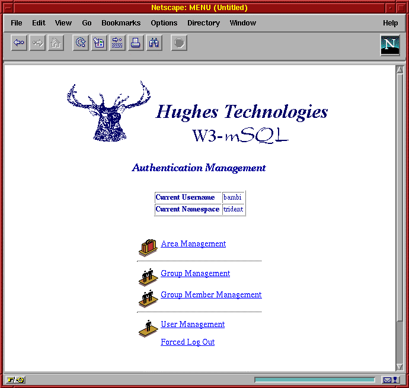

Mini SQL 2.0
User Guide
Release Version mSQL 2.0.1
Release Date 23 July 1997
Document Revision 2.0.1 v 1
Copyright © 1997 Hughes Technologies Pty Ltd. All rights reserved.
Intended Audience
This document has been prepared as a manual for the use of the Mini SQL database system. It is not a general purpose tutorial or text for learning every aspect of the Structured Query Languages (SQL). The reader is expected to have at least an introductory knowledge of SQL and the concepts of a relational database system.
The mSQL API section of this document covers the programming interface provided by mSQL. It is described in the native language of the API library, C. It is assumed that the reader has a good understanding of programming in the C language and that s/he is familiar with the basic functionality provided by the standard C library.
The Lite section of the manual documents the Lite programming language. The syntax and semantics of the Lite language are similar to those of the C language. A working knowledge of C will aid the reader in understanding the Lite language.
Integration of mSQL and the World Wide Web is covered in the W3-mSQL section. It is assumed that the reader is familiar with the WWW, HTML, CGI scripts and the operation of a web server (http daemon).
Document Conventions
This manual has been designed to be printed on US Letter paper. While many parts of the world utilise the A4 paper size (Australia included), it is not possible to print A4 formatted documents on US Letter paper without loss of information. However, printing of US Letter formatted documents on A4 will result in a correct representation of the document with somewhat larger margins than normal.
 Throughout this manual, parts of the text have been flagged with the symbol that appears in the margin opposite this paragraph. Such pieces of text are viewed as being important. The reader should ensure that paragraphs marked as important are read even if the entire manual section is only being skimmed. Important sections will include information such as areas in which mSQL may deviate from other SQL implementations, or tips on improving the performance of your database applications.
Throughout this manual, parts of the text have been flagged with the symbol that appears in the margin opposite this paragraph. Such pieces of text are viewed as being important. The reader should ensure that paragraphs marked as important are read even if the entire manual section is only being skimmed. Important sections will include information such as areas in which mSQL may deviate from other SQL implementations, or tips on improving the performance of your database applications.
Contact Information
Further information about mSQL and its related software can be found on the Hughes Technologies World Wide Web site. The web site includes the latest version of mSQL, documentation, example software, references to customer sites, and much more. Our web site can be found at
http://www.Hughes.com.au
Product support and information are available over the Internet via electronic mail. For product support, please contact
support@Hughes.com.au and for product information please use info@Hughes.com.au. More traditional ways to contact us are via postal mail or facsimile using the information below.
|
Postal Mail |
PO Box 432 Main Beach Queensland 4217 Australia |
|
Facsimile |
+61 7 5529 2299 |
Mini SQL, or mSQL as is it often called, is a light weight relational database management system. It has been designed to provide rapid access to data sets with as little system overhead as possible. The system itself is comprised of a database server and various tools that allow a user or a client application to communicate with the server.
Although mSQL uses the Structured Query Language (SQL) as its query language, it does not provide a complete implementation of the ANSI standard SQL. Several features of SQL that are found in more recent versions of the ANSI standard and in more sophisticated database systems are not provided by mSQL. The incorporation of such features would be in conflict with the basic concept of mSQL (i.e. a Mini database system) and would also increase the load and system requirements needed to run the software.
The philosophy of mSQL has been to provide a database management system capable of rapidly handling simple tasks. It has not been developed for use in critical financial environments (banking applications for example). The software is capable of performing the supported operations with exceptional speed whilst utilising very few system resources. Some database systems require high-end hardware platforms and vast quantities of memory before they can provide rapid access to stored data. mSQL has been designed to provide exceptional data access performance on "small hardware" platforms (such as PC class hardware). Because of these characteristics, mSQL is well suited to the vast majority of data management tasks.
Although the mSQL software distribution is made available over the Internet (and other mechanisms) it is not public domain software or FreeWare. mSQL is a commercial, supported software package developed by Hughes Technologies Pty Ltd in Australia. Use of this software in any commercial environment requires the purchase of a commercial use license from Hughes Technologies. Free licenses are provided to organisations such as Universities, schools and registered charities in an attempt to maintain the ethos of the original Internet. For more information on purchasing a license or determining whether you qualify for a free license, please see the Hughes Technologies World Wide Web site at
http://Hughes.com.au/.Development of mSQL and its associated tools is an ongoing project. Current releases of the mSQL package and applications that use mSQL are always available from the Hughes Technologies web site. If you require product support, a new version of the software, or some ideas about using mSQL then please visit our web site.
Mini SQL 2.0 is the second generation of the mSQL database system. The main focus of the second generation development has been to extend the capabilities of the database engine and to provide new tools to simplify the development and delivery of mSQL based applications. The large acceptance of mSQL 1.x highlighted several shortcomings of the original product because it was being applied to applications beyond its original design intention. Applications managing databases with up to a million records were being reported and, naturally, the performance of the 1.x engine was not appropriate for the task.
The database engine in mSQL 2.0 has been designed to handle large data sets and to provide consistent and rapid access to large data sets in the million record size. In doing so it has in no way compromised the outstanding performance shown by the 1.x engine in handling small data sets. The performance increase for large applications has been achieved by the incorporation of flexible and powerful indexing to the database as well as sophisticated query execution optimisation. To learn more about the new indexing capabilities provided by mSQL 2.0, please see the
mSQL Query Language section of this manual.One of the major applications of mSQL has been as a back-end database for World-Wide Web sites. With this fact in mind, mSQL 2.0 includes the new W3-mSQL www interface package. Using W3-mSQL, web based applications can be rapidly developed by embedding mSQL and other programmatic constructs directly into the HTML code. This removes the need to write a multitude of small CGI scripts for every web page with dynamic content.
Also included in the 2.0 distribution is the Lite scripting language. Lite is a stand-alone version of the language used by W3-mSQL. By including Lite in the distribution, a developer has a consistent language that s/he can use to develop stand-alone or web based applications that utilise mSQL. Further information about Lite and W3-mSQL is provided in the following sections of this manual. Further information on the new features in mSQL 2.0 can be found in Appendix A.
For the eager reader, an overview of the compilation and installation process can be found below in the
Express Setup sectionMini SQL is generally distributed in source code form to enable the widest possible use of the software. It is not feasible for binary distributions to be generated for every UNIX platform for each release of mSQL. Instead, the software and the installation tools have been made as portable as possible. In general, the software will automatically configure itself to the capabilities of the operating system on which it is being compiled. Typing four commands can complete the process of compiling and installing mSQL on most UNIX platforms. Only under extreme situations will the software not compile "out of the box". Hints for getting the software compiled on troublesome operating systems is available in the
Installation Troubleshooting section below.The software is distributed as a gziped (i.e. compressed) tar file. Tar is a standard UNIX facility for combining many files and directories into a single archive file. The tar utility should be available on any modern UNIX system. If your system does not provide the tar utility then a freely available version of tar has been produced by the Free Software Foundation (the GNU project). The GNU version of tar can be found on any GNU archive site. Similarly, the gzip compression tools are produced by the Free Software Foundation. If your system does not provide the gzip or gunzip utility then you will need to obtain these from your nearest GNU archive site.
The table below shows a selection of commonly used GNU archive sites. To access these site use anonymous FTP (or the URL provided). A complete list of GNU software mirror sites can be found at http://www.gnu.org/order/ftp.html.
|
Country |
Hostname |
Directory |
URL |
|
Australia |
archie.au |
/gnu |
ftp://archie.au/gnu |
|
U.S.A |
prep.mit.edu |
/pub/gnu |
ftp://prep.mit.edu/pub/gnu |
|
U.S.A |
ftp.uu.net |
/systems/gnu |
ftp://ftp.uu.net/systems/gnu |
|
U.S.A |
gatekeeper.dec.com |
/pub/GNU |
ftp://gatekeeper.dec.com/pub/GNU |
|
United Kingdom |
ftp.mcc.ac.uk |
/pub/gnu |
ftp://ftp.mcc.ac.uk/pub/gnu |
Before the software can be compiled, the contents of the archive file must be extracted. This involves uncompressing the archive file with gunzip and then using the tar utility to extract the file. If, for example, the file containing the mSQL distribution is called msql-2.0-rel.tar.gz then the following commands would extract the files (two methods are outlined)
gunzip msql-2.0-rel.tar.gz
tar –xvf msq-2.0-rel.tar
Or
gzcat msql-2.0-rel.tar.gz | tar –xvf -
This process would create a new directory called msql-2.0-rel in the current directory. Within that directory you will find the entire mSQL distribution. Along with various other files and directories there will be directories containing the source code (src directory) and the documentation (the doc directory). Although it is tempting to just enter the src directory and type "make" it is not the correct way to compile mSQL and doing so will cause problems.
The mSQL distribution is structured to allow it to be compiled on multiple machines using the same copy of the source code (source tree). For example, the source tree can be shared between various machines using NFS and versions for each machine type can be compiled in the same source tree. To achieve this, mSQL uses target directories for each machine type (hardware platform and operating system combination). To create a target directory for your machine simply type the following from the top directory of the distribution
make target
This process will create a new directory called targets in the top directory. In the targets directory you will find a target directory for your machine (for example targets/SunOS-4.1.4-Sparc or targets/FreeBSD-2.2.2-i386). It is in this newly created target directory that you will compile the mSQL applications.
To continue the compilation process, change directory to your target directory using ‘cd targets/SunOS-4.1.4-Sparc’ for example. Once you are in the target directory you can configure the compilation process. The configuration process is totally automatic and will determine what system calls, library functions, and header files your operating system provides. To configure the compilation process simply type
./setup
While the setup utility is executing you will see various pieces of information about your operating system being displayed as it is determined. This output is informative only. The results are automatically placed in files used by mSQL.
Once the automatic configuration is complete you may either compile the software using the default configuration settings or change the configuration settings from their default value. There are two configuration items located in the site.mm file in the targets directory that you may consider modifying. The configuration utility will try to determine the best C compiler to use on your system. If you have multiple C compilers (a system compiler and gcc for example) you may wish to modify the CC entry in site.mm.
The only other option in site.mm that may require modification is the INST_DIR entry. This entry defines the default installation directory. This setting is not only used during installation of the software but also as the directory containing the run-time configuration file. If you intend running mSQL from a directory other than the default /usr/local/Hughes directory then modify the INST_DIR entry in site.mm to reflect your installation directory.
Once the setup utility has completed you may compile the software by typing
make all
The compilation process will traverse all the directories of the mSQL distribution and compile the C source code in those directories. Status information is displayed to you as the compilation process proceeds. If the compilation process stops with an error at any stage then please see the Installation Troubleshooting section below. If the compilation has completed properly you will see a message on your screen informing you that you are ready to install mSQL.
Installation of mSQL can also be achieved using a single command, although you may need to have special permissions on your UNIX system (usually root access). By default, mSQL will be installed in a directory called /usr/local/Hughes on your system. If /usr/local is root owned on your system (as it is on most systems) then you will either need root access or you will have to get your system administrator to complete the installation for you. If you are using a non-default installation directory then ensure that you have the required permissions to create the directory you specified. To complete the installation simply type
make install
mSQL 1.x offered several configuration options, including such details as the user the server should run as, the location of the TCP and UNIX sockets for client/server communications, the location of the database files etc. The problem with configuring mSQL 1.x was that all these details were hard-coded into the software at compile time. Once the software was compiled and installed you couldn't easily change those settings.
To overcome this problem, mSQL 2.0 utilises an external run-time configuration file for definition of all these values. The file is called msql.conf and is located in the installation directory (usually /usr/local/Hughes). An application can choose to use a different configuration file by calling the new msqlLoadConfigFile( ) API function. All standard mSQL applications and utilities provide a command line flag, -f ConfFile , that allows you to specify a non-standard configuration file. When an application first calls the mSQL API library, a check is made to see if a configuration file has been loaded via a call to the msqlLoadConfigFile( ) function. If no such call has been made, the API library loads the default config file. Any values that are specified in that file will over-ride the normal operating parameters used by mSQL. If no configuration file is found (or certain items are not set) then the default values listed below will be used.
The configuration file is a plain text file organised into sections. The file can contain blank lines and comments. A comment is a line that begins with the '#' character. Each section of the configuration file has a section header, which is written as the section name enclosed in square brackets (for example [ general ]).
Configuration values within a section are presented using the config parameter name followed by an equals sign and then the new value. There can only be one entry per line and if an entry is defined multiple times in the one config file the last value defined will be used. If a parameter is not defined in the config file then an internal default value will be used at run-time.
Elements of the General section
The following configuration parameters are available in the general section of the config file. Please note that %I may be used in configuration entries to signify the mSQL installation directory (e.g. /usr/local/Hughes).
|
Parameter |
Default Value |
Definition |
|
Inst_Dir |
/usr/local/Hughes |
The full path to the installation directory. This is the directory in which all the mSQL files are located (such as the program files, the database files etc). |
|
mSQL_User |
msql |
The user that the mSQL server should run as. If a user other than this user starts the server (e.g. it is started as root from a boot script) it will attempt to change UID so that it runs as the specified user. |
|
Admin_User |
root |
The user that is allowed to perform privileged operations such as server shutdown, creation of databases etc. |
|
Pid_File |
%I/msql2.pid |
The full path of a file in which the PID of the running mSQL server process will be stored. |
|
TCP_Port |
1114 |
The TCP port number on which the mSQL server will accept client/server connections over a TCP/IP network. If this value is modified it must be modified on the machine running the client software also. |
|
UNIX_Port |
%I/msql2.sock |
The full path name of the UNIX domain socket created by the mSQL server for connections from client applications running on the same machine. |
Elements of the W3-mSQL section
The following configuration parameters are available in the W3-mSQL section of the config file. These items impact on the operation of the W3-mSQL web interface package.
|
Parameter |
Default Value |
Definition |
|
Auth_Host |
NULL |
The machine on which the mSQL database containing W3-Auth data is located. See the W3-Auth section for further details. If set to NULL (the default value) the database is assumed to be on the local host. |
|
Hughes_Footer |
True |
Controls the appending of the standard Hughes Technologies footer to Web Pages. |
|
Private_Only |
False |
If set to True, the W3-mSQL interface will only process private pages (see the W3-mSQL section for information on private pages). This may be used to enforce strict security on your system stopping remote users accessing normal HTML pages via the W3-mSQL cgi program. |
Elements of the System section
The following configuration parameters are available in the System section of the configuration file and determine the values of various system level configuration items.
|
Parameter |
Default Value |
Definition |
|
Msynch_Timer |
30 |
Defines the interval in seconds at which the memory mapped data regions maintained in the mSQL server process will be synched with the on-disk images. Setting this value to 0 will disable forced synchronisation of the data and rely on the kernel’s synch’ing of the mmap regions. |
|
Host_Lookup |
True |
Determines whether ip address to hostname lookups are required. If set to true, connections by hosts that do not resolve to a hostname will be rejected. |
|
Read_Only |
False |
Forces the server to operate in read-only mode. Any attempts to modify the database will be rejected (.e. the only commands accepted are select queries). This option can be used if multiple database servers are to be run using the same data files. In such a case only one server should be running in read-write mode with all others running in read-only mode. This can easily be achieved by using different configuration files (specifying different TCP and UNIX ports as well) and loading the appropriate config file in the client application. |
Below is a sample configuration file. This file just sets the parameters to their default values.
#
# msql.conf - Configuration file for Mini SQL Version 2.0
#
# This configuration sets all options to their default values.
# Note : %I is expanded to the value of the Inst_Dir element is included in a value.
#
[general]
Inst_Dir = /usr/local/Hughes
mSQL_User = msql
Admin_User = root
Pid_File = %I/msql2.pid
TCP_Port = 1114
UNIX_Port = %I/msql2.sock
[w3-msql]
Auth_Host = NULL
Hughes_Footer = True
Private_Only = False
[system]
Msynch_Timer = 30
Host_Lookup = True
Read_Only = False
Below is a rough outline of the process of compiling, installing and configuring mSQL. It is intended as a guide for those who are familiar with installing software on a UNIX machine. If you are not familiar with any of the steps mentioned below then please read the complete installation guide from the start of this manual section.
Step 1
Unpack the software distribution using gunzip and targunzip msql-2.0-rel.tar.gz
tar –xvf msql-2.0-rel.tar
Or
gzcat msql-2.0-rel.tar.gz | tar –xvf –
Step 2
Create a target directory for your hardware platformcd msql-2.0-rel
make target
Step 3
Configure the compilation processcd targets/YourTargetDirectory
./setup
Step 4
Check the default values of INST_DIR and CC in the site.mm file
Step 5
Compile the softwaremake all
Step 6
Install the softwaremake install
Step 7
Configure the software by editing the msql.conf file in the installation directory
Outlined below are some common problems encountered while installing mSQL. If you continue to have problems compiling or installing mSQL after you have checked the following sections, please e-mail support@Hughes.com.au with details of your system (operating system version etc) and an explanation of the error you are experiencing.
mmap mSQL 2.0 requires a fully functional mmap implementation. Some operating systems either provide no mmap support at all or provide a limited subset of mmap. At this point in time, mSQL cannot operate on these operating systems. The most common operating systems displaying this problem are Digital Ultrix, Cray UNICOS and Linux versions earlier than 1.3 (newer versions of Linux are fine).
dynamic loading Some of the mSQL tools utilise dynamic loading of object modules (most notably the Lite and W3-mSQL tools). The setup utility will try to determine how to perform dynamic loading on your platform automatically. If you encounter link problems with references to functions such as dl_open then the automatic configuration has failed. You can safely remove the dynamic loading functionality by editing the site.mm and removing the "HAVE_DYNAMIC" option.
Linux Some distributions of Linux, including the Slackware distribution, do not include all the required C header files by default. If you did not include the kernel sources when you installed your version of Linux you may not be able to compile the mSQL software. Installing the kernel sources will solve this problem.
bitypes On some systems, the compilation of mSQL will fail with errors relating to the bitypes.h header file. This is commonly due to the installation of BIND 4.9 nameserver software. BIND replaces some of your header files during installation but fails to re-install the bitypes.h and cdefs.h files. The problem is solved by copying these header files from the compat/include directory of the BIND distribution to the /usr/include/sys directory of your system.
Irix Some installations of Irix include duplicate versions of several system routines in separate C libraries. The setup utility will recognise these libraries and include them in the link process automatically. This can cause errors relating to "weak definitions" and also unresolved symbols. To overcome this problem, edit the site.mm file and remove anything included on the EXTRA_LIBS line (i.e. set it to "EXTRA_LIBS=")
The mSQL language offers a significant subset of the features provided by ANSI SQL. It allows a program or user to store, manipulate and retrieve data in table structures. It does not support some relational capabilities such as views and nested queries. Although it does not support all the relational operations defined in the ANSI specification, mSQL provides a significant subset of the ANSI SQL standard and is capable of supporting the vast majority of applications.
The definitions and examples below depict mSQL key words in upper case, but no such restriction is placed on the actual queries.
The create clause as supported by mSQL 2 can be used to create tables, indices, and sequences. The three valid constructs of the create clause are shown below:
CREATE TABLE table_name (
col_name col_type [ not null ]
[ , col_name col_type [ not null ] ]**
)
CREATE [ UNIQUE ] INDEX index_name ON table_name (
field_name
[ , field_name ] **
)
CREATE SEQUENCE ON table_name [ STEP step_val ] [ VALUE initial_val ]
An example of the creation of a table is shown below:
CREATE TABLE emp_details (
first_name char(15) not null,
last_name char(15) not null,
comment text(50),
dept char(20),
emp_id int
)
The available types are:-
|
Type |
Description |
|
char (len) |
String of characters (or other 8 bit data) |
|
text (len) |
Variable length string of characters (or other 8 bit data) The defined length is used to indicate the expected average length of the data. Any data longer than the specified length will be split between the data table and external overflow buffers. Note : text fields are slower to access than char fields and cannot be used in an index nor in LIKE tests. |
|
int |
Signed integer values |
|
real |
Decimal or Scientific Notation real values |
|
uint |
Unsigned integer values |
|
date |
Date values in the format of ‘DD-Mon-YYYY’ such as ‘1-Jan-1997’ |
|
time |
Time values stored in 24 hour notation in the format of ‘HH:MM:SS’ |
|
money |
A numeric value with two fixed decimal places |
The table structure shown in the example would benefit greatly from the creation of some indices. It is assumed that the emp_id field would be a unique value that is used to identify an employee. Such a field would normally be defined as the primary key. mSQL 2.0 has removed support for the primary key construct within the table creation syntax and replaced it with the more powerful and flexible indexing scheme. Similarly, a common query may be to access an employee based on the combination of the first and last names. A compound index (i.e. constructed from more than one field) would improve performance. Naturally, such a compound index may have multiple entries with the same value (if more than one person called John Smith works for the same company) so a non-unique index would be required. We could construct these indices using :
CREATE UNIQUE INDEX idx1 ON emp_details (emp_id)
CREATE INDEX idx2 ON emp_details (first_name, last_name)
These indices will be used automatically whenever a query is sent to the database engine that uses those fields in its WHERE clause. The user is not required to specify any special values in the query to ensure the indices are used to increase performance.
Sequences provide a mechanism via which a sequence value can be maintained by the mSQL server. Sequences are a numeric value that can be used as serial numbers, staff identifiers, invoice numbers, or any other application that requires a unique numeric value. Having the server maintain the index allows for atomic operations (such as getting the next sequence value) and removes the concerns associated with performing these operations in client applications. A client application would need to send two queries (one to read the current value and one to update the value) which introduces a "race condition" and the potential for the same sequence value to be assigned to multiple items.
A sequence is associated with a table and a table may contain at most one sequence. Once a sequence has been created it can be accessed by SELECTing the _seq system variable from the table in which the sequence is defined. For example
CREATE SEQUENCE ON test STEP 1 VALUE 5
SELECT _seq FROM test
The above CREATE operation would define a sequence on the table called test that had an initial value of 5 and would be incremented each time it is accessed (i.e. have a step of 1). The SELECT statement above would return the value 5. If the SELECT was issued again, a value of 6 would be returned. Each time the _seq field is selected from test the current value is returned to the caller and the sequence value itself is incremented.
Using the STEP and VALUE options a sequence can be created that starts at any specified number and is increased or decreased by any specified value. The value of a sequence would decrease by 5 each time it was accessed if it was defined with a step of -5.
The Drop clause is used to remove a definition from the database. It is most commonly used to remove a table from a database but can also be used for removing several other constructs. In 2.0 it can be used to remove the definition of an index, a sequence, or a table. It should be noted that dropping a table or an index removes the data associated with that object as well as the definition. Dropping a table removes any indices or sequences defined for the table.
 The drop clause cannot be used to remove an entire database. Dropping a database is achieved by using the msqladmin utility program that is included in the software distribution.
The drop clause cannot be used to remove an entire database. Dropping a database is achieved by using the msqladmin utility program that is included in the software distribution.
The syntax of the drop clause as well as examples of its use are given below.
DROP TABLE table_name
DROP INDEX index_name FROM table_name
DROP SEQUENCE FROM table_name
Examples of the use of the drop clause for removing an entire table, an index and a sequence are shown below.
DROP TABLE emp_details
DROP INDEX idx1 FROM emp_details
DROP SEQUENCE FROM emp_details
The insert clause is used to insert or add data to the database. When inserting data you may either specify the fields for which you have provided data (if you are not providing data for every field in the data row) or you may omit the field names if you are providing data for every field. If you do not specify the field names they will be used in the order in which they were defined - you must specify a value for every field if you use this form of the insert clause. If you provide the field names then the number of data values provided must match the number of fields specified.
INSERT INTO table_name [ ( column [ , column ] ** ) ]
VALUES ( value [ , value ] ** )
for example
INSERT INTO emp_details ( first_name, last_name, dept, salary)
VALUES ( 'David', 'Hughes', 'Development',12345.00)
INSERT INTO emp_details
VALUES ('David', 'Hughes', 'Development',12345.00)
The select clause is used to extract data from the database. It allows you to specify the particular fields you wish to retrieve and also a condition to identify the records or rows that are of interest. The ANSI SQL standard defines two features that are not supported by mSQL. The mSQL implementation of the select clause does not support
It does however support:
The formal definition of the syntax for mSQL's select clause is
SELECT [table.]column [ , [table.]column ]**
FROM table [ = alias] [ , table [ = alias] ]**
[ WHERE [table.] column OPERATOR VALUE
[ AND | OR [table.]column OPERATOR VALUE]** ]
[ ORDER BY [table.]column [DESC] [, [table.]column [DESC] ]
OPERATOR can be <, >, =, <=, =, <>, LIKE, RLIKE, CLIKE or SLIKE
VALUE can be a literal value or a column name
The condition used in the where statement of a select clause may contain '(' ')' to nest conditions or to focus on parts of the conditional evaluation. e.g. "where (age <20 or age >30) and sex = 'male'" .
A simple select that returns the first and last names of anybody employed in the finance department would be
SELECT first_name, last_name FROM emp_details
WHERE dept = 'finance'
To sort the returned data we would add an ORDER BY statement to the select clause. mSQL supports sorting on multiple values in either ascending or descending order for each value. If a direction is not specified it defaults to ascending order. To sort the data from the previous query in ascending order by last_name and descending order by first_name we could use the query below. Note that the two sorting values are separated by a comma and that the first_name field includes the DESC attribute to indicate we sorting is required in descending order.
SELECT first_name, last_name FROM emp_details
WHERE dept = 'finance'
ORDER BY last_name, first_name DESC
A query such as the one presented above may return multiple of the same value. If for example there were two people named John Smith working in the finance department the name ‘John Smith’ would be returned twice from the query. You may remove any duplicates from the returned data by providing the DISTINCT attribute with the query. An example of using the DISTINCT attribute to remove duplicates from the above query is given below.
SELECT DISTINCT first_name, last_name FROM emp_details
WHERE dept = 'finance'
ORDER BY last_name, first_name DESC
mSQL provides four regular expression operators for use in where comparisons. These operators may be used to perform "fuzzy" matching on the data if you do not know the exact value for which you are searching. An example of such a search would be if you were looking for any employee with a last_name starting with ‘Mc’ such as McCormack or McDonald. In such a situation you cannot provide a complete value for the last_name field as you are only interested in part of the value.
The standard SQL syntax provides a very simplistic regular expression capability that does not provide the power nor the flexibility of which UNIX programmers or users will be accustomed. mSQL supports the "standard" SQL regular expression syntax, via the LIKE operator, but also provides further functionality if it is required. The available regular expression operators are:
 Note : CLIKE, RLIKE, and SLIKE are not features of standard SQL and may not be available in other implementations of the language. If you choose to use them you may have problems porting your application to other database systems. They are, however, very convenient and powerful features of mSQL.
Note : CLIKE, RLIKE, and SLIKE are not features of standard SQL and may not be available in other implementations of the language. If you choose to use them you may have problems porting your application to other database systems. They are, however, very convenient and powerful features of mSQL.
LIKE and CLIKE utilise the regular expression syntax as specified in the ANSI SQL standard. As mentioned above, the ANSI standard regular expression feature provides only a very simplistic implementation of regular expressions. It provides for only single and multiple character wildcards. It does not include enhanced features such as value ranges, value exclusions or value groups. The syntax of the LIKE and CLIKE operators is provided in the following table.
|
Operator |
Description |
|
_ |
matches any single character |
|
% |
matches 0 or more characters of any value |
|
\ |
escapes special characters (e.g. '\%' matches % and '\\' matches \ ). All other characters match themselves |
Two examples of using the LIKE operator are provided below. In the first we are searching for anyone in the finance department whose last name consists of any letter followed by 'ughes', such as Hughes. The second example shows the query for the ‘Mc’ example mentioned earlier in this section.
SELECT first_name, last_name FROM emp_details
WHERE dept = 'finance' and last_name like '_ughes'
SELECT first_name, last_name FROM emp_details
WHERE dept = ‘finance’ and last_name like ‘Mc%’
The RLIKE operator provides access to the power of the UNIX standard regular expression syntax. The UNIX regular expression syntax provides far greater functionality than SQL's LIKE syntax. The UNIX regex syntax does not use the '_' or '%' characters in the way SQL's regex does (as outlined above) and provides enhanced functionality such as grouping, value ranges, and value exclusion. The syntax available in the RLIKE operator is shown in the table below. Tutorials for using UNIX regular expression matching are available in the manual pages of any UNIX system (such as the manual pages for grep or ed).
 Because RLIKE utilises a complete UNIX regex implementation, the evaluation of a condition containing the RLIKE operator is quite complex. The performance of searches using the RLIKE operator will be slower than those using the LIKE or CLIKE operator. You should only use the RLIKE operator if you cannot achieve your desired matching using the more simplistic LIKE or CLIKE operators.
Because RLIKE utilises a complete UNIX regex implementation, the evaluation of a condition containing the RLIKE operator is quite complex. The performance of searches using the RLIKE operator will be slower than those using the LIKE or CLIKE operator. You should only use the RLIKE operator if you cannot achieve your desired matching using the more simplistic LIKE or CLIKE operators.
|
Operator |
Description |
|
. |
The dot character matches any single character |
|
^ |
When used as the first character in a regex, the caret character forces the match to start at the first character of the string |
|
$ |
When used as the last character in a regex, the dollar sign forces the match to end at the last character of the string |
|
[ ] |
By enclosing a group of single characters within square brackets, the regex will match a single character from the group of characters. If the ']' character is one of the characters you wish to match you may specify it as the first character in the group without closing the group (e.g. '[]abc]' would match any single character that was either ']', 'a', 'b', or 'c'). Ranges of characters can be specified within the group using the 'first-last' syntax (e.g. '[a-z0-9]' would match any lower case letter or a digit). If the first character of the group is the '^' character the regex will match any single character that is not contained within the group. |
|
* |
If any regex element is followed by a '*' it will match zero or more instances of the regular expression. To match any string of characters you would use ‘.*’ and to match any string of digits you would use ‘[0-9]*’ |
The SLIKE operator provides soundex matching of values (i.e. one value sounds like another value). It does not use an explicit syntax in the same way as the other LIKE operators. You simply provide the word you wish to match. If you wished to search for any name that sounded like ‘Hughes’, such as ‘Hues’ you could use SLIKE ‘Hughes’.
Relational joining is one of the most powerful features of a relational query language. The concept of "joining" relates to "merging" multiple database tables together and extracting fields from the merged result. As an example, if you had two tables defined, one containing employee details and another containing a list of all current, you may wish to extract a list of the projects that each employee was working on. Rather than duplicating the employee details in the projects table you could simply include the employees staff ID number in the projects table and use a join to extract the first and last names.
The query below is an example of such an operation. The logic behind the query is that we want to extract the first and last names of the employee, plus the name of the project on which the employee is working. We can identify which combinations of the merged table we are looking for as they will have a common value for the employee’s staff ID value. Because we are referencing multiple tables in the query, we must include the table name for each field when it is included in the query (e.g. emp_details.first_name rather than just first_name)
SELECT emp_details.first_name, emp_details.last_name, project_details.project
FROM emp_details, project_details
WHERE emp_details.emp_id = project_details.emp_id
ORDER BY emp_details.last_name, emp_details.first_name
 It is important to understand the inner workings of a join. If we are joining table A with table B, a merged row will be created for all possible combinations of the rows of both tables. If table A contains only two rows and table B contains 10 rows, then 20 merged rows will be generated and evaluated against the where condition. If no where condition is specified then all 20 rows will be returned. If this example is extended so that table A contained 1,000 rows and table B contained 2,500 rows then the result would be 1,000 * 2,500 merged rows (that’s two and a half million rows!). Whenever a join is used there should normally be a common value in both tables (such as the employee ID in our example) and the condition must include a direct comparison between these two fields to ensure that the result set is limited to only the desired results.
It is important to understand the inner workings of a join. If we are joining table A with table B, a merged row will be created for all possible combinations of the rows of both tables. If table A contains only two rows and table B contains 10 rows, then 20 merged rows will be generated and evaluated against the where condition. If no where condition is specified then all 20 rows will be returned. If this example is extended so that table A contained 1,000 rows and table B contained 2,500 rows then the result would be 1,000 * 2,500 merged rows (that’s two and a half million rows!). Whenever a join is used there should normally be a common value in both tables (such as the employee ID in our example) and the condition must include a direct comparison between these two fields to ensure that the result set is limited to only the desired results.
mSQL places no restriction on the number of tables "joined" during a query so if there were 15 tables all containing information related to an employee ID in some manner, and each table included the employee ID field to identify the employee, data from each of those tables could be extracted, by a single query. As mentioned before, a key point to note regarding joins is that you must qualify all field names with a table name. Remember that you must qualify every column name as soon as you access more than one table in a single select.
mSQL also supports table aliases so that you can perform a join of a table onto itself. This may appear to be an unusual thing to do but it is a very powerful feature if the rows within a single table relate to each other in some way. An example of such a table could be a list of people including the names of their parents. In such a table there would be multiple rows with a parent/child relationship. Using a table alias you could find out any grandparents contained in the table using the query below. The logic is to find any person who is the parent of someone’s parent.
SELECT t1.parent, t2.child from parent_data=t1, parent_data=t2
WHERE t1.child = t2.parent
The table aliases t1 and t2 both point to the same table (parent_data in this case) and are treated as two different tables that just happen to contain exactly the same data. Like any other join, the possible result set size is the multiplication of the number of rows in each table. If a table is joined with itself, this equates to N2 rows where N is the number of rows in the original table. Care must be taken to ensure that the result set is limited by the condition specified otherwise the query can take a very long time to complete and has the potential to fill your disk drive with temporary data as the query is processed.
The SQL DELETE clause is used to remove one or more entries from a database table. The selection of rows to be removed from the table is based on the same where statement as used by the SELECT clause. In the SELECT clause, the where condition is used to identify the rows to be extracted from the database. In the DELETE clause, the where condition identifies the rows that are to be deleted from the database. As with all SQL queries, if no where condition is provided, then the query applies to every row in the table and the entire contents of the table will be deleted. The syntax for mSQL's delete clause is shown below
DELETE FROM table_name
WHERE column OPERATOR value
[ AND | OR column OPERATOR value ]**
OPERATOR can be <, >, =, <=, =, <>, LIKE, RLIKE, CLIKE, or SLIKE
An example of deleting a specific employee (identified by the employee ID number of the person) and also deleting every employee within a particular salary range is given below.
DELETE FROM emp_details WHERE emp_id = 12345
DELETE FROM emp_details WHERE salary > 20000 and salary < 30000
The SQL update clause is used to modify data that is already in the database. The operation is carried out on one or more rows as specified by the where construct. If the condition provided in the where construct matches multiple rows in the database table then each matched row will be updated in the same way. The value of any number of fields in the matched rows can be updated. The syntax supported by mSQL is shown below.
UPDATE table_name SET column=value [ , column=value ]**
WHERE column OPERATOR value
[ AND | OR column OPERATOR value ]**
OPERATOR can be <, >, =, <=, =, <>, LIKE, RLIKE, CLIKE or SLIKE
For example
UPDATE emp_details SET salary=30000 WHERE emp_id = 1234
UPDATE emp_details SET salary=35000, dept=’Development’ where emp_id = 1234
Included in the distribution is the mSQL API library, libmsql.a. The API allows any C program to communicate with the database engine. The API functions are accessed by including the msql.h header file into your program and by linking against the mSQL library (using -lmsql as an argument to your C compiler). The library and header file will be installed by default into /usr/local/ Hughes/lib and /usr/local/Hughes/include respectively. An example compilation of a client application (my_app.c in this case) is shown below. The header file and API library are assumed to be in the default installation directory.
cc –c –I/usr/local/Hughes/include my_app.c
cc –o my_app my_app.c -L/usr/local/Hughes/lib -lmsql
 Some versions of UNIX, usually those derived from SystemV, do not include the TCP/IP networking functions in the standard C library. The mSQL API library includes calls to the networking functions to facilitate the client/server nature of the API. On machines that do not include the networking functions in the standard C library, the compilation illustrated above would fail due to "unresolved externals" with reference to function names such as socket( ) and gethostbyname( ). If this occurs then the networking code must also be linked with the application. This is usually achieved by adding "-lsocket –lnsl" to the link command as shown below. If you continue to have problems, please consult the "socket" and "gethostbyname" manual pages of your system to determine the libraries you have to include in your link statement.
Some versions of UNIX, usually those derived from SystemV, do not include the TCP/IP networking functions in the standard C library. The mSQL API library includes calls to the networking functions to facilitate the client/server nature of the API. On machines that do not include the networking functions in the standard C library, the compilation illustrated above would fail due to "unresolved externals" with reference to function names such as socket( ) and gethostbyname( ). If this occurs then the networking code must also be linked with the application. This is usually achieved by adding "-lsocket –lnsl" to the link command as shown below. If you continue to have problems, please consult the "socket" and "gethostbyname" manual pages of your system to determine the libraries you have to include in your link statement.
cc –c –I/usr/local/Hughes/include my_app.c
cc –o my_app my_app.c -L/usr/local/Hughes/lib -lmsql –lsocket –lnsl
Like the mSQL engine, the API supports debugging via the MSQL_DEBUG environment variable. The API currently supports three debugging modules: query, api, and malloc. Enabling "query" debugging will cause the API to print the contents of queries as they are sent to the server. The "api" debug module causes internal information, such as connection details, to be printed. Details about the memory used by the API library can be obtained via the "malloc" debug module. Information such as the location and size of malloced blocks and the addresses passed to free() will be generated. Multiple debug modules can be enabled by setting MSQL_DEBUG to a colon separated list of module names. For example setenv MSQL_DEBUG api:query
The API has changed slightly from the original mSQL API. Please ensure that you check the semantics and syntax of the functions before you use them.
msqlConnect()
int msqlConnect ( host )
char * host ;
msqlConnect() forms an interconnection with the mSQL engine. It takes as its only argument the name or IP address of the host running the mSQL server. If NULL is specified as the host argument, a connection is made to a server running on the localhost using the UNIX domain socket /dev/msqld. If an error occurs, a value of -1 is returned and the external variable msqlErrMsg will contain an appropriate text message. This variable is defined in "msql.h".
If the connection is made to the server, an integer identifier is returned to the calling function. This value is used as a handle for all other calls to the mSQL API. The value returned is in fact the socket descriptor for the connection. By calling msqlConnect() more than once and assigning the returned values to separate variables, connections to multiple database servers can be maintained simultaneously.
 In previous versions of mSQL, the MSQL_HOST environment variable could be used to specify a target machine if the host parameter was NULL. This is no longer the case. It should also be noted that communicating with the server via UNIX sockets rather than TCP/IP sockets increases performance greatly. If you are communicating with a server on the same machine as the client software you should always specify NULL as the hostname. Using "localhost" or the name of the local machine will force the use of TCP/IP and degrade performance.
In previous versions of mSQL, the MSQL_HOST environment variable could be used to specify a target machine if the host parameter was NULL. This is no longer the case. It should also be noted that communicating with the server via UNIX sockets rather than TCP/IP sockets increases performance greatly. If you are communicating with a server on the same machine as the client software you should always specify NULL as the hostname. Using "localhost" or the name of the local machine will force the use of TCP/IP and degrade performance.
msqlSelectDB()
int msqlSelectDB ( sock , dbName )
int sock ;
char * dbName ;
Prior to submitting any queries, a database must be chosen. msqlSelectDB() instructs the engine which database is to be accessed. msqlSelectDB() is called with the socket descriptor returned by msqlConnect() and the name of the desired database. A return value of -1 indicates an error with msqlErrMsg set to a text string representing the error. msqlSelectDB() may be called multiple times during a program's execution. Each time it is called, the server will use the specified database for future accesses. By calling msqlSelectDB() multiple times, a program can switch between different databases during its execution.
msqlQuery()
int msqlQuery ( sock , query )
int sock ;
char * query ;
 A query in SQL terminology is not the same as a query in the English language. In English, the word query relates to asking a question whereas in SQL a query is a valid SQL command. It is a common mistake that people believe that the msqlQuery function can only be used to submit SELECT commands to the database engine. In reality, msqlQuery can be used for any valid mSQL command including SELECT, DELETE, UPDATE etc.
A query in SQL terminology is not the same as a query in the English language. In English, the word query relates to asking a question whereas in SQL a query is a valid SQL command. It is a common mistake that people believe that the msqlQuery function can only be used to submit SELECT commands to the database engine. In reality, msqlQuery can be used for any valid mSQL command including SELECT, DELETE, UPDATE etc.
Queries are sent to the engine over the connection associated with sock as plain text strings using msqlQuery(). As with previous releases of mSQL, a returned value of -1 indicates an error and msqlErrMsg will be updated to contain a valid error message. If the query generates output from the engine, such as a SELECT statement, the data is buffered in the API waiting for the application to retrieve it. If the application submits another query before it retrieves the data using msqlStoreResult(), the buffer will be overwritten by any data generated by the new query.
 In previous versions of mSQL, the return value of msqlQuery() was either -1 (indicating an error) or 0 (indicating success). mSQL 2 adds to these semantics by providing more information back to the client application via the return code. If the return code is greater than 0, not only does it imply success, it also indicates the number of rows "touched" by the query (i.e. the number of rows returned by a SELECT, the number of rows modified by an update, or the number of rows removed by a delete).
In previous versions of mSQL, the return value of msqlQuery() was either -1 (indicating an error) or 0 (indicating success). mSQL 2 adds to these semantics by providing more information back to the client application via the return code. If the return code is greater than 0, not only does it imply success, it also indicates the number of rows "touched" by the query (i.e. the number of rows returned by a SELECT, the number of rows modified by an update, or the number of rows removed by a delete).
msqlStoreResult()
m_result * msqlStoreResult ( )
Data returned by a SELECT query must be stored before another query is submitted or it will be removed from the internal API buffers. Data is stored using the msqlStoreResult() function which returns a result handle to the calling routines. The result handle is a pointer to a m_result structure and is passed to other API routines when access to the data is required. Once the result handle is allocated, other queries may be submitted. A program may have many result handles active simultaneously. See also msqlFreeResult( ).
msqlFreeResult()
void msqlFreeResult ( result )
m_result * result ;
When a program no longer requires the data associated with a particular query result, the data must be freed using msqlFreeResult(). The result handle associated with the data, as returned by msqlStoreResult() is passed to msqlFreeResult() to identify the data set to be freed.
msqlFetchRow()
m_row msqlFetchRow ( result )
m_result * result ;
The individual database rows returned by a select are accessed via the msqlFetchRow() function. The data is returned in a variable of type m_row which contains a char pointer for each field in the row. For example, if a select statement selected 3 fields from each row returned, the value of the three fields would be assigned to elements [0], [1], and [2] of the variable returned by msqlFetchRow(). A value of NULL is returned when the end of the data has been reached. See the example at the end of this section for further details. Note: a NULL value in the database is represented as a NULL pointer in the row.
msqlDataSeek()
void msqlDataSeek ( result , pos )
m_result * result ;
int pos ;
The m_result structure contains a client side "cursor" that holds information about the next row of data to be returned to the calling program. msqlDataSeek() can be used to move the position of the data cursor. If it is called with a position of 0, the next call to msqlFetchRow() will return the first row of data returned by the server. The value of pos can be anywhere from 0 (the first row) and the number of rows in the table. If a seek is made past the end of the table, the next call to msqlFetchRow() will return a NULL.
msqlNumRows()
int msqlNumRows ( result )
m_result * result ;
The number of rows returned by a query can be found by calling msqlNumRows() and passing it the result handle returned by msqlStoreResult(). The number of rows of data sent as a result of the query is returned as an integer value.
 If no data is matched by a select query, msqlNumRows() will indicate that the result table has 0 rows. Note: earlier versions of mSQL returned a NULL result handle if no data was found. This has been simplified and made more intuitive by returning a result handle with 0 rows of result data.
If no data is matched by a select query, msqlNumRows() will indicate that the result table has 0 rows. Note: earlier versions of mSQL returned a NULL result handle if no data was found. This has been simplified and made more intuitive by returning a result handle with 0 rows of result data.
msqlFetchField()
m_field * msqlFetchField ( result )
m_result * result ;
Along with the actual data rows, the server returns information about the data fields selected. This information is made available to the calling program via the msqlFetchField() function. Like msqlFetchRow(), this function returns one element of information at a time and returns NULL when no further information is available. The data is returned in a m_field structure which contains the following information:-
typedef struct {
char * name ; /* name of field */
char * table ; /* name of table */
int type ; /* data type of field */
int length , /* length in bytes of field */
int flags ; /* attribute flags */
} m_field;
Possible values for the type field are defined in msql.h. Please consult the header file if you wish to interpret the value of the type or flags field of the m_field structure.
msqlFieldSeek()
void msqlFieldSeek ( result , pos )
m_result * result ;
int pos ;
The result structure includes a "cursor" for the field data. Its position can be moved using the msqlFieldSeek() function. See msqlDataSeek() for further details.
msqlNumFields()
int msqlNumFields ( result )
m_result * result ;
The number of fields returned by a query can be ascertained by calling msqlNumFields() and passing it the result handle. The value returned by msqlNumFields() indicates the number of elements in the data vector returned by msqlFetchRow(). It is wise to check the number of fields returned because, as with all arrays, accessing an element that is beyond the end of the data vector can result in a segmentation fault.
msqlClose()
int msqlClose ( sock )
int sock ;
The connection to the mSQL engine can be closed using msqlClose(). The function must be called with the connection socket returned by msqlConnect() when the initial connection was made. msqlClose() should be called by an application when it no longer requires the connection to the database. If the connection isn’t closed, valuable resources, such as network sockets or file descriptors, can be wasted.
msqlListDBs()
m_result * msqlListDBs ( sock )
int sock ;
A list of the databases known to the mSQL engine can be obtained via the msqlListDBs() function. A result handle is returned to the calling program that can be used to access the actual database names. The individual names are accessed by calling msqlFetchRow() passing it the result handle. The m_row data structure returned by each call will contain one field being the name of one of the available databases. As with all functions that return a result handle, the data associated with the result must be freed when it is no longer required using msqlFreeResult(). Failure to do so will waste memory.
msqlListTables()
m_result * msqlListTables ( sock )
int sock ;
Once a database has been selected using msqlInitDB(), a list of the tables defined in that database can be retrieved using msqlListTables(). As with msqlListDBs(), a result handle is returned to the calling program and the names of the tables are contained in data rows where element [0] of the row is the name of one table in the current database. The result handle must be freed when it is no longer needed by calling msqlFreeResult(). If msqlListTables is called before a database has been chosen using msqlSelectDB an error will be generated.
msqlListFields()
m_result * msqlListFields ( sock , tableName ) ;
int sock ;
char * tableName;
Information about the fields in a particular table can be obtained using msqlListFields(). The function is called with the name of a table in the current database as selected using msqlSelectDB() and a result handle is returned to the caller. Unlike msqlListDBs() and msqlListTables(), the field information is contained in field structures rather than data rows. It is accessed using msqlFetchField(). The result handle must be freed when it is no longer needed by calling msqlFreeResult(). As with msqlListTables, msqlListFields will return an error if it is called prior to a database being chosen using the msqlSelectDB function.
msqlListIndex()
m_result * msqlListIndex ( sock , tableName , index ) ;
int sock ;
char * tableName;
char * index;
The structure of a table index can be obtained from the server using the msqlListIndex() function. The result table returned contains one field. The first row of the result contains the symbolic name of the index mechanism used to store the index. Rows 2 and onwards contain the name of the fields that comprise the index.
An example of the data returned by msqlListIndex is shown below. The example shows the result of calling msqlListIndex on a compound index. The index is defined as an AVL Tree index and is based on the values of the fields first_name and last_name. Currently the only valid index type is ‘avl’ signifying a memory mapped AVL tree index. Further index schemes will be added to mSQL in the future.
row[0]
avl
first_name
last_name
msqlTimeToUnixTime()
time_t msqlTimeToUnixTime( msqltime )
char * msqltime;
msqlTimeToUnixTime( ) converts an mSQL time value to a standard UNIX time value. The mSQL time value must be a character string in the 24 hour format of "HH:MM:SS" and the returned value will be the number of seconds since 1 Jan 1970 (the normal UNIX format).
msqlUnixTimeToTime()
char * msqlUnixTimeToTime( clock )
time_t clock;
msqlUnixTimetoTime( ) converts a UNIX time value (seconds since the UNIX epoch) into a character string representing the same time in mSQL time format (i.e. "HH:MM:SS" 24 hour format). The returned string is statically declared in the API so you must make a copy of it before you call the function again.
msqlDateToUnixTime()
time_t msqlDateToUnixTime( msqldate )
char * msqldate;
msqlDateToUnixDate( ) converts an mSQL date format string into a UNIX time value. The mSQL date format is "DD-Mon-YYYY" (for example "12-Jun-1997") while the returned value will be the number of seconds since the UNIX epoch. The mSQL date routines will assume the 20th century if only 2 digits of the year value are presented. Although the valid range of mSQL dates is 31st Dec 4096bc to the 31st Dec 4096, the UNIX format cannot represent dates prior to the 1st Jan 1970.
msqlUnixTimeToDate()
char * msqlUnixTimeToDate( clock )
time_t clock;
msqlUnixTimeToDate( ) converts a standard UNIX time value to an mSQL date string. The time value is specified as seconds since the UNIX epoch ( 1st Jan 1970) while the mSQL date string will contain the date formatted as "DD-Mon-YYYY" (e.g. "12-Jun-1997"). A convenient use of this function is to determine the mSQL date value for the current day using the following C code example.
clock = time( );
date = msqlUnixTimeToDate( clock );
msqlSumTimes()
char * msqlSumTimes ( time1, time2 )
char * time1,
*time2;
The msqlSumTimes( ) routine provides a mechanism for performing addition between two mSQL time formatted strings. A literal addition of the values is returned to the calling routine in mSQL time format. As an example, calling msqlSumTimes with the values "1:30:25" and "13:15:40" would return "14:46:05".
msqlDateOffset()
char * msqlDateOffset( date, dOff, mOff, yOff )
char * date;
int dOff,
mOff,
yOff
The msqlDateOffset( ) function allows you to generate an mSQL date string that is a specified period before or after a given date. This routine will determine the correct date based on the varying days of month. It is also aware of leap years and the impact they have on date ranges. The new date is calculated using the specified date and an offset value for the day, month and year. The example below would determine tomorrow's date
clock = time( );
today = msqlUnixTimeToDate( clock );
tomorrow = msqlDateOffset( today , 1 , 0 , 0 );
msqlDiffTimes()
char * msqlDiffTimes( time1, time2 )
char * time1,
*time2;
To determine the time difference between two time values, the msqlDiffTimes( ) function can be used. The two time values must be mSQL time formatted text strings and the returned value is also an mSQL time string. A restriction is placed on the times in that time1 must be less than time2.
msqlDiffDates()
int msqlDiffDates( date1, date2 )
char * date1,
* date2;
The msqlDiffDates( ) function can be used to determine the number of days between two dates. Date1 must be less than date2 and the two dates must be valid mSQL date formatted strings. In conjunction with the msqlDiffTimes( ) function it is possible to determine a complete time difference between two pairs of times and dates.
msqlLoadConfigFile()
int msqlLoadConfigFile( file )
char * file;
The msqlLoadConfigFile( ) function can be used to load a non-default configuration file into your client application. The configuration file can include information such as the TCP/IP and UNIX ports on which the desired mSQL server will be running. The file to be loaded is determined by the value of the file parameter. If the value of the parameter is new, the msqlLoadConfigFile( ) function would search for the file in the following places (and in the order specified).
Inst_Dir/new
Inst_Dir/new.conf
new
That is, if a file called "new" exists in the installation directory, it is loaded. Otherwise, an attempt will be made to load a file called new.conf from the installation directory. If that fails, the filename specified is assumed to be a complete, absolute pathname and an attempt to open the file is made. On failure, the function will return a value of –1, otherwise a value of 0 is returned.
Mini SQL 2.0 includes internal support for system variables (often known as pseudo fields or pseudo columns). These variables can be accessed in the same way that normal table fields are accessed although the information is provided by the database engine itself rather than being loaded from a database table. System variables are used to provide access to server maintained information or meta data relating to the databases.
System variables may be identified by a leading underscore in the variable name. Such an identifier is not normally valid in mSQL for table or field names. Examples of the supported system variables and uses for those variables are provided below.
The _rowid system variable provides a unique row identifier for any row in a table. The value contained in this variable is the internal record number used by the mSQL engine to access the table row. It may be included in any query to uniquely identify a row in a table. An example of the use of the _rowid system variable is shown below.
select _rowid, first_name, last_name from emp_details
where last_name = 'Smith'
update emp_details set title = 'IT Manager'
where _rowid = 57
The query optimiser is capable of utilising _rowid values to increase the performance of database accesses. In the second example query above, only one row (the row with the internal record ID of 57) would be accessed. This is in contrast to a sequential search through the database looking for that value which may result in only one row being modified but every row being accessed. Using the _rowid value to constrain a search is the fastest access method available in mSQL 2.0. As with all internal access decisions, the decision to base the table access on the _rowid value is automatic and requires no action by the programmer or user other than including the _rowid variable in the where clause of the query.
 The rowid of a table row is intended to be used for "in place" updates. An example of such an update is the query above. The rowid can be used when there is no other way to identify a particular row (e.g. there are two people called John Smith and staff identifiers are not being used). It is not to be used as a substitute for an application maintained key or index. Applications should use sequences if they wish to use server maintained unique values.
The rowid of a table row is intended to be used for "in place" updates. An example of such an update is the query above. The rowid can be used when there is no other way to identify a particular row (e.g. there are two people called John Smith and staff identifiers are not being used). It is not to be used as a substitute for an application maintained key or index. Applications should use sequences if they wish to use server maintained unique values.
The _timestamp system variable contains the time at which a row was last modified. The value, although specified in the standard UNIX time format (i.e. seconds since the epoch), is not intended for interpretation by application software. The value is intended to be used as a point of reference via which an application may determine if a particular row was modified before or after another table row. The application should not try to determine an actual time from this value as the internal representation used may change in a future release of mSQL.
The primary use for the _timestamp system variable will be internal to the mSQL engine. Using this information, the engine may determine if a row has been modified after a specified point in time (the start of a transaction, for example). It may also use this value to synchronise a remote database for database replication. Although neither of these functions is currently available, the presence of a row timestamp is the first step in the implementation.
Example queries showing possible uses of the _timestamp system variable are show below.
select first_name, _timestamp from emp_details
where first_name like '%fred%' order by _timestamp
select * from emp_details where _timestamp 88880123
The _seq system variable is used to access the current sequence value of the table from which it is being selected. The current sequence value is returned and the sequence is updated to the next value in the sequence (see the CREATE definition in the Language Specification section for more information on sequences). Once the sequence value has been read from the server using a select statement, the value can be inserted into "normal" fields of a table as a unique index value such as a serial number or staff identifier.
An example query using _seq system variable is shown below.
select _seq from staff
The server can provide a central standard for the current date. If selected from any table, the _sysdate system variable will return the current date on the server machine using the mSQL date format of ‘DD-Mon-YYYY’.
An example query using _sysdate system variable is shown below.
select _sysdate from staff
The server can provide a central standard for the current time. If selected from any table, the _systime system variable will return the current time on the server machine using the mSQL time format of ‘HH:MM:SS’.
An example query using _systime system variable is shown below.
select _systime from staff
By selecting the _user system variable from any table, the server will return the username of the user who submitted the query.
An example query using _user system variable is shown below.
select _user from staff
Standard Programs and Utilities
The mSQL distribution contains several programs and utilities to allow you to use and manage your databases. The tools provided allow you to communicate with the database server, import data, export data, submit queries and view your database structures. The sections below provide detailed descriptions on the various tools provided in the distribution.
Usage
msql [-h host] [-f confFile] database
Options
|
-h |
Specify a remote hostname or IP address on which the mSQL server is running. The default is to connect to a server on the localhost using a UNIX domain socket rather than TCP/IP (which gives better performance). |
|
-f |
Specify a non-default configuration file to be loaded. The default action is to load the standard configuration file located in INST_DIR/msql.conf (usually /usr/local/Hughes/msql.conf). Please see the msqlLoadConfigFile entry in the API section of this manual to understand the method used to select the config file from the specified file name. |
Description
The mSQL monitor is an interactive interface to the mSQL server. It allows you to submit SQL commands directly to the server. Any valid mSQL syntax can be entered at the prompt provided by the mSQL monitor. For example, by typing a "create table" clause at the mSQL monitor prompt you can instruct the database server to create the specified table. The mSQL monitor is intended to be used as a mechanism for creating your database tables and for submitting ad-hoc SQL queries to the server. It is not intended to be used for client application development other than for testing queries before they are coded into your applications.
Control of the monitor itself is provided by four internal commands. Each command is comprised of a backslash followed by a single character. The available commands are
|
\q |
Quit (also achieved by entering Control-D) |
|
\g |
Go (Send the query to the server) |
|
\e |
Edit (Edit the previous query) |
|
\p |
Print (Print the query buffer) |
Usage
relshow [-h host] [-f confFile] [database [rel [idx] ] ]
Options
|
-h |
Specify a remote hostname or IP address on which the mSQL server is running. The default is to connect to a server on the localhost using a UNIX domain socket rather than TCP/IP (which gives better performance). |
|
-f |
Specify a non-default configuration file to be loaded. The default action is to load the standard configuration file located in INST_DIR/msql.conf (usually /usr/local/Hughes/msql.conf). Please see the msqlLoadConfigFile entry in the API section of this manual to understand the method used to select the config file from the specified file name. |
Description
Relshow is used to display the structure of the contents of mSQL databases. If no arguments are given, relshow will list the names of the databases currently defined. If a database name is given it will list the tables defined in that database. If a table name is also given then it will display the structure of the table (i.e. field names, types, lengths etc).
If an index name is provided along with the database and table names, relshow will display the structure of the specified index including the type of index and the fields that comprise the index.
Usage
msqladmin [-h host] [-f confFile] [-q] Command
Options
|
-h |
Specify a remote hostname or IP address on which the mSQL server is running. The default is to connect to a server on the localhost using a UNIX domain socket rather than TCP/IP (which gives better performance). |
|
-f |
Specify a non-default configuration file to be loaded. The default action is to load the standard configuration file located in INST_DIR/msql.conf (usually /usr/local/Hughes/msql.conf). Please see the msqlLoadConfigFile entry in the API section of this manual to understand the method used to select the config file from the specified file name. |
|
-q |
Put msqladmin into quiet mode. If this flag is specified, msqladmin will not prompt the user to verify dangerous actions (such as dropping a database). |
Description
msqladmin is used to perform administrative operations on an mSQL database server. Such tasks include the creation of databases, performing server shutdowns, etc. The available commands for msqladmin are
|
create db_name |
Creates a new database called db_name. |
|
drop db_name |
Removes the database called db_name from the server. This will also delete all data contained in the database! |
|
shutdown |
Terminates the mSQL server. |
|
reload |
Forces the server to reload ACL information. |
|
version |
Displays version and configuration information about the currently running server. |
|
stats |
Displays server statistics. |
|
copy fromDB toDB |
Copies the contents of the database specified as the fromDB into a newly created database called toDB. If the toDB already exists an error will be returned. This command provides a simple mechanism for creating a backup copy of a data for use as a test or development environment. |
|
move fromDB toDB |
Renames an existing database called fromDB to toDB. The data is not modified in any way. |
Note : most administrative functions can only be executed by the user specified in the run-time configuration as the admin user. They can also only be executed from the host on which the server process is running (e.g. you cannot shutdown a remote server process).
Usage
msqldump [-h host] [-f confFile] [-c] [-v] database [table]
Options
|
-h |
Specify a remote hostname or IP address on which the mSQL server is running. The default is to connect to a server on the localhost using a UNIX domain socket rather than TCP/IP (which gives better performance). |
|
-f |
Specify a non-default configuration file to be loaded. The default action is to load the standard configuration file located in INST_DIR/msql.conf (usually /usr/local/Hughes/msql.conf). Please see the msqlLoadConfigFile entry in the API section of this manual to understand the method used to select the config file from the specified file name. |
|
-c |
Include column names in INSERT commands generated by the dump. |
|
-v |
Run in verbose mode. This will display details such as connection results, etc. |
Description
msqldump produces an ASCII text file containing valid SQL commands that will recreate the table or database dumped when piped through the mSQL monitor program. The output will include all CREATE TABLE commands required to recreate the table structures, CREATE INDEX commands to recreate the indices, and INSERT commands to populate the tables with the data currently contained in the tables. If sequences are defined on any of the tables being dumped, a CREATE SEQUENCE command will be generated to ensure the sequence is reset to its current value.
Usage
msqlexport [-h host] [-f conf] [-v] [-s Char] [-q Char] [-e Char] database table
Options
|
-h |
Specify a remove hostname or IP address on which the mSQL server is running. The default is to connect to a server on the localhost using a UNIX domain socket rather than TCP/IP (which gives better performance). |
|
-f |
Specify a non-default configuration file to be loaded. The default action is to load the standard configuration file located in INST_DIR/msql.conf (usually /usr/local/Hughes/msql.conf). Please see the msqlLoadConfigFile entry in the API section of this manual to understand the method used to select the config file from the specified file name. |
|
-v |
Verbose mode. |
|
-s |
Use the character Char as the separation character. The default is a comma. |
|
-q |
Quote each value with the specified character. |
|
-e |
Use the specified Char as the escape character. The default is \ |
Description
msqlexport produces an ASCII export of the data from the specified table. The output produced can be used as input to other programs such as spreadsheets. It has been designed to be as flexible as possible. The user may specify the character to use to separate the fields, the character to use to escape the separator character if it appears in the data, and whether the data should be quoted and if so what character to use as the quote character. The output is sent to stdout with one data row per line.
An example use of msqlexport would be to create a Comma Separated Values (CSV) file to be imported into a popular spreadsheet application such as Microsoft Excel. The CSV format uses a comma to separate data fields and quotation marks to quote the individual values. If a value contains a quotation mark, it is escaped by prefixing it with another quotation mark. To generate a CSV representation of a table called staff in the company database, the msqlexport command below would be used.
msqlexport –s , q " –e " company staff
Usage
msqlimport [-h host] [-f conf] [-v] [-s Char] [-q Char] [-e Char] database table
Options
|
-h |
Specify a remote hostname or IP address on which the mSQL server is running. The default is to connect to a server on the localhost using a UNIX domain socket rather than TCP/IP (which gives better performance). |
|
-f |
Specify a non-default configuration file to be loaded. The default action is to load the standard configuration file located in INST_DIR/msql.conf (usually /usr/local/Hughes/msql.conf). Please see the msqlLoadConfigFile entry in the API section of this manual to understand the method used to select the config file from the specified file name. |
|
-v |
Verbose mode. |
|
-s |
Use the character Char as the separation character. The default is a comma. |
|
-q |
Remove quotes around field values if they exist (the specified character is the quote character). |
|
-e |
Use the specified Char as the escape character. The default is \ |
Description
msqlimport loads a flat ASCII data file into an mSQL database table. The file can be formatted using any character as the column separator. When passed through msqlimport, each line of the text file will be loaded as a row in the database table. The separation character, as specified by the -s flag, will be used to split the line of text into columns. If the data uses a specific character to escape any occurrence of the separation character in the data, the escape character can be specified with the -e flag and will be removed from the data before it is inserted. Some data formats (such as the CSV format) will enclose an entire value in quotation marks. The –q option can be used to indicate such a format and to specify the character being used for quoting.
To import a file formatted in the Comma Separated Values format (CSV) into a table called staff in the company database, the msqlimport command below would be used.
msqlimport –s , -q " –e " company staff
Lite : mSQL’s Scripting Language
The fact that mSQL can be accessed from virtually every popular scripting language used on UNIX systems has been one of the factors of its popularity. To overcome the often time-consuming process of adding mSQL support to an existing language, such as Perl or Tcl, mSQL 2.0 includes its own scripting language preconfigured with support for the mSQL API. The scripting language, called Lite, is the same language used by W3-mSQL, the WWW to mSQL interface package. People wishing to access mSQL from stand-alone scripts or via the web now have to learn only one simple yet powerful language.
Lite has been designed to mimic the syntax and semantics of the C language while reducing some of the complexities and error prone features of C. This is intentional as most programmers working on UNIX machines have a working knowledge of C but look for a more "easy to use" language for scripting. The main changes from C are
Variables, Types and Expressions
Variables are constructed from a $ sign followed by alpha-numeric characters and the '_' character. The only restriction placed upon the name of a variable is that the first character of a user defined variable must not be an upper case character. There is no need to pre-declare variables as you do in a language such as C. A variable is created the first time you assign a value to it. Similarly, the type of the variable is defined by the value that you assign to it. There are four types of scalar variables
The example code below illustrates the creation of variables
$int_value = 9;
$uint_value = (uint)240983;$char_value = "Some text value";$real_value = 12.627;
At any point in time, the type of a value can be changed by using the type cast notation from the C language. If, for example, you wished to include a numeric value from an integer variable in a text string, you would simply cast the integer value to the char type. The code below would result in a char variable that contained the string "1234" .
$int_val = 1234;$char_val = (char) $int_val;
The valid type casts are listed below (note uint casts are valid wherever an int cast would be)
|
From |
To |
Result |
Example |
|
int |
char |
Text representation of numeric string |
12 = "12" |
|
int |
real |
Real representation of integer value |
12 = 12.0 |
|
real |
char |
Text representation of real value |
123.45 = "123.45" |
|
real |
int |
Integer representation of real value |
123.45 = 123 |
Array variables are supported by Lite but there is no fixed type for the array. Each element of the array can hold data from any of the available data types. An array is created by assigning a value to one of the array elements such as
$arrayval[3] = "Foo";$arrayval[4] = 5;$arrayval[6] = 1.23 + 5.38;
Lite expressions are formed from mathematical equations incorporating the values of variables and values returned from function calls. Lite is a little more flexible than other languages such as C. It will allow you to do maths operations on all data types including the char type. Adding two char values together results in the concatenation of the two strings. You can also perform maths on values of different types by casting the value to the correct type within the expression. Examples are given below.
$charval = "Hello" + " there!";$intval = 8 + 1;$charval = (char)$intval + " green bottles";
The first expression would result in the char value "Hello there!". The second would result in the integer value 9. The final expression would result in the char value "9 green bottles" using the text representation of the value of $intval from the previous line. Maths expression of any complexity, including any number of sub expressions enclosed in ( ) characters, are supported.
The table below lists the available maths operators and the data types to which they may be applied.
|
Operator |
Description |
Int |
Text |
Real |
|
+ |
Addition |
Yes |
Yes |
Yes |
|
- |
Subtraction |
Yes |
No |
Yes |
|
/ |
Division |
Yes |
No |
Yes |
|
* |
Multiplication |
Yes |
No |
Yes |
A special operator supported by Lite is the count operator written as the # sign. The count operator is used to determine the size of certain variables. If you apply the count operator to a char value it will evaluate to the number of characters in the string. If you apply it to an array it will evaluate to the number of elements in that array. In the first example below, $intval would contain the value 5. In the second example, it would contain 3.
$charval = "Hello";$intval = # $charval;$array[0] = 0;$array[1] = 1;$array[2] = 2;$intval = # $array;
Conditions are provided by Lite using the same syntax as C. That is, the conditional block is started by an 'if (condition)'. The blocks of code are defined using the { and } character. Unlike C, you must always wrap code blocks in { } characters (in C you don't have to if the code block is only one line long). After the initial code block, an optional 'else' block may be defined.
Multiple parts of the conditional expression may be linked together using logical ANDs and ORs. Like C, the syntax for an AND is && while the syntax for an OR is ||. As you will see in the example below, Lite provides more flexibility than C in conditions containing text values. You can compare two text values using the '==' equality test or the '!=' inequality test rather than having to use a function such as strcmp().
if ($intval 5 && $intval < 10){
echo("The value is between 5 and 10\n");
}else{
echo("The value is not between 5 and 10\n");
}if ($charval == ""){
echo("The variable contains no value!!!\n");
}
Lite supports only one form of looping - a 'while' loop. The syntax and operation of the while loop is identical to the while loop offered by the C language. This includes the use of 'continue' and 'break' clauses to control the flow of execution within the loop.
while ($intval < 10){
$intval = $intval + 1;
}while ($charval != ""){
$charval = readln($fd);
if ($charval == "Hello")
{
break;
}
}
As with most modern programming languages, Lite allows you to write user defined functions. The definition of a Lite function is
funct functName ( type arg, type arg ...)
{
statements
}
As the definition dictates, a function must be started with the funct label. The remainder looks like a C function declaration in that there is a function name followed by a list of typed arguments. Any type may be passed to a function and any type may be returned from a function. All values passed to a function are passed by value not by reference. A few example functions are given below.
funct addition ( int $value1, int $value2 )
{
$result = $value1 + $value2;
return ( $value );
}
funct merge ( array $values, int $numVals)
{
$count = 0;
$result = "";
while ( $count < $numValues)
{
$result = $result + $values [ $count ];
$count = $count + 1;
}
return ( $result );
}
funct sequence ( int $first, int $last )
{
$count = 0;
while ( $first < $last )
{
$array [$count] = (char) $first;
$first = $first + 1;
}
return ( $array );
}
It must be noted that function declarations can only be made before any of the actual script code of the file. That is, all functions must be defined before the main body of the script is reached.
 Lite enforces a strict scope on variables used in user defined functions. Any variable referenced by the function is defined as a local variable in that function even if there is a global variable by the same name. Parameters are passed by value, not by reference, so any modification of the parameter variables is not reflected outside the scope of the function. The only way to modify the value of variables outside the scope of the function is by returning a value from the function or by explicitly referencing global variables as outlined below.
Lite enforces a strict scope on variables used in user defined functions. Any variable referenced by the function is defined as a local variable in that function even if there is a global variable by the same name. Parameters are passed by value, not by reference, so any modification of the parameter variables is not reflected outside the scope of the function. The only way to modify the value of variables outside the scope of the function is by returning a value from the function or by explicitly referencing global variables as outlined below.
Lite supports the concept of explicitly accessible global variable by using a different syntax when referencing the variable. If a variable is referenced as $variable then it is a variable within the current scope (a local variable if it is referenced in a function, a global variable if referenced from the main code). If a variable is to be explicitly referenced as a global variable then it can be referenced as @variable rather than $variable (a preceeding "@" character rather than a "$" character). This will force the Lite symbol table management routines to access the global symbol table rather than the symbol table associated with the current execution scope.
To help provide an efficient programming environment, Lite (and W3-mSQL) allows you to build a library of functions and load the library into your script at run-time. This allows for effective re-use of code in the same way the languages such as C allow you to re-use code by linking against libraries. The main difference is that the library is not "linked" into the script, it is loaded on request at run-time (a little like a C shared library). If the functions that were defined in the previous section of this manual were placed into a library called "mylib", a script could access those functions by loading the library as depicted below.
load "mylib.lib";
/*
** Now we can use the functions from the "mylib" library
*/
$array = sequence(1,10);
$count = 0;
while ($count < # $array)
{
printf("Value %d is '%s'\n", $count, $array);
$count = $count + 1;
}
The power and convenience of Lite libraries is most obvious when writing large WWW based applications using W3-mSQL. Like any application, there will be actions that you will need to perform several times. Without the aid of libraries, the code to perform those actions would need to be re-coded into each W3-mSQL enhanced web page (because each HTML file is a stand-alone program). By placing all these commonly used functions into a library, each web page can simply load the library and have access to the functions. This also provides a single place at which modifications can be made that are reflected in all web pages that load the library.
Library files are not like normal Lite script files. A Lite script file is a plain ASCII text file that is parsed at run-time by Lite. A library file contains pre-compiled versions of the Lite functions that will load faster as they do not need to be re-parsed every time they are used. A Lite library file is created by using the -l flag of the Lite interpreter. If a set of functions was placed in a file called mylib.lite, a compiled version of the library would be created using the syntax shown below.
lite -lmylib.lib mylib.lite
The -l flag tells Lite to compile the functions and write the binary version of the functions to a file called mylib.lib. This is similar to the concept of using the C compiler to create an object file by using the -c flag of the compiler.
There are three points that should be noted about the use of Lite libraries. Firstly, it should be noted that a Lite library can only contain functions (i.e. it cannot contain any "main body" code that you would normally include in a script file). Secondly, like functions themselves, a library can only be loaded into a Lite script prior to the start of the main body code. Finally, the path given to the load command within the script does not enforce a known location for the library file. If you specify the library file as "mylib.lib" then Lite will expect the library file to exist in the current directory. You can of course provide a complete pathname rather than just a filename to the load command.
The standard module is to Lite as the standard C library is to C. It is a library of functions that are available to all Lite programs. It provides basic functionality for string manipulation, file IO and other normal expectations of a programming language. Outlined below is a description of each of the functions available within the standard module.
echo ( )
echo ( string )
char * string
echo() outputs the content of string to the standard output of the Lite script (or as text to be included in the generated HTML of a W3-mSQL page). Any variables that are included in string are evaluated and expanded before the output is generated.
$name = "Bambi";
echo("My name is $name\n");
printf ( )
printf ( format [ , arg ... ] )
char * format
printf() produces output in a manner similar to the echo function (i.e. sent to the standard output or included in the generated HTML). The semantics of the function are the same as those of printf() in C. The printf() format can include field width and justification information. Specification of a format field as "%17s" will generate a right justified value 17 characters wide. Prefixing the field width definition with the '-' character will produce a left justified result.
 It should be noted that unlike echo(), any variables included in the format string passed to printf() are not expanded before the output is generated. The only way to include variable values in the output is to use C styled format definitions (such as "%s" for a string value etc).
It should be noted that unlike echo(), any variables included in the format string passed to printf() are not expanded before the output is generated. The only way to include variable values in the output is to use C styled format definitions (such as "%s" for a string value etc).
Example :
$name = "Bambi";
printf("My name is also %s\n", $name);
fprintf ( )
fprintf ( fd , format [ , arg ... ] )
int fd
char * format
Like printf(), fprintf() produces text output based on the content of the format string and the arguments passed to the function. Unlike printf(), fprintf() sends the output to a file rather than including it in the HTML sent to the browser. The first argument is a file descriptor as returned by the open() function. See the description of open() below for more information.
Example :
$name = "Bambi";
$fd = open("/tmp/name","");
fprintf($fd, "My name is $name\n");
close($fd);
open ( )
int fd = open ( path , access )
char * path
char * access
open() opens the object (usually a file) pointed to by path for reading and/or writing as specified by the access argument, and returns a file descriptor for that newly opened file. The possible values for the access flags are:
|
Flag |
Description |
|
< |
File is opened for reading |
|
> |
File is opened for writing |
|
<> |
File is opened for reading and writing |
|
<P |
Create a named pipe in the file system and open it for reading |
|
>P |
Create a named pipe in the file system and open it for writing |
|
<| |
The contents of the path argument is a shell command. The command is executed and the output of the new process is available to be read from the returned file descriptor |
|
>| |
The contents of the path argument is a shell command. The command is executed and any data written to the returned file descriptor is passed as input to the new process |
An error is indicated by a returned value of –1. In such a case, the system variable $ERRMSG will contain the error message.
 It should be noted that both the named pipe related modes create the pipe prior to accessing it. If the pipe exists in the file system prior to the call, open() will fail.
It should be noted that both the named pipe related modes create the pipe prior to accessing it. If the pipe exists in the file system prior to the call, open() will fail.
Example :
$fd = open("/tmp/output", ">");
if ($fd < 0) {
echo("Error : $ERRMSG\n");
} else {
fprintf($fd,"This is a test\n");
close($fd);
}
$fd = open("ls -l /etc", "<|");
$line = readln($fd);
printf($line);
close($fd);
close ( )
close ( fd )
int fd
close() closes an open file descriptor. If the descriptor relates to a file or a pipe, the file or pipe is closed. If the descriptor is a process, the stdin of the process is closed (and the process should terminate when it reads an EOF from its input).
 Please note that if you do not close all file descriptors you open then you will eventually run out of file descriptors.
Please note that if you do not close all file descriptors you open then you will eventually run out of file descriptors.
Example :
$fd = open("/tmp/input", "<");
close ($fd);
read ( )
read ( fd , numBytes )
int fd
int numBytes
read() reads numBytes bytes of data from the specified file descriptor and returns the data. It returns the empty string "" when on end of file or error. $ERRMSG will be set if an error occurred.
Example :
$fd = open("/etc/passwd","<");
$buf = read($fd, 80);
if ($buf == "")
{
if ($ERRMSG != "")
{
printf("Read Error : $ERRMSG\n");
}
else
{
printf("Read : End Of File\n");
}
}
else
{
printf("$buf\n");
}
close($fd);
readln ( )
readln ( fd )
int fd
readln() reads a line of text from the nominated file descriptor and returns the data. The newline value is not removed from the data returned. Like read(), the return of an empty string indicates EOF or an error. $ERRMSG will be set to a non-empty string on error.
Example :
$fd = open("/etc/passwd","<");
$line = readln($fd);
readtok ( )
readtok ( fd , token )
int fd
char * token
readtok() reads data from the file descriptor until it finds the character specified as the token in the input data. Only the data read prior to the token is returned, the token character itself is not.
 Please note that the token is a single character value. If more than one character is passed in the token argument, only the first character is used.
Please note that the token is a single character value. If more than one character is passed in the token argument, only the first character is used.
Example :
$fd = open("/etc/passwd", "<");
$username = readtok($fd, ":");
printf("Username is '$username'\n");
close($fd);
split ( )
split ( str , token )
char * str , * token
split() splits the contents of a variable into multiple substrings using the value of token as the separator character. The result of splitting the string is returned as an array. If more than one character is passed as the token, all but the first character is ignored.
Example :
$line = "bambi:David Hughes:Hughes Technologies";
$info = split($line,":");
printf("Username = $info[0]\n");
printf("Full name = $info[1]\n");
printf("Organisation = $info[2]\n");
strseg ( )
strseg ( str , start, end )
char * str
int start , end
strseg() returns a segment of the string passed as the str argument. The segment starts at start characters from the start of the string and ends at end characters from the start of the string. In the example below, $sub will contain the string "is a".
Example :
$string = "This is a test";
$sub = strseg($string, 5, 8,);
chop ( )
char * chop ( str )
char * str
chop() removes the last character from the text string str and returns the new value. The primary use of this function is for chopping end-of-line characters off strings read from files with readln().
Example :
$line = readln($fd);
$line = chop($line);
tr ( )
char * tr ( str , expr1 , expr2 )
char * str , * expr1 , * expr2
tr() performs text translations on the string argument str based on the contents of expr1 and expr2 and returns the modified string value. expr1 and expr2 are sets of characters. Any character that is found in str that matches a character in expr1 is translated to the corresponding character from expr2. The character sets can be defined by listing individual characters or by providing character ranges ( such as A-Z to indicate all characters between A and Z ). The example below will translate any upper case characters to lower case and translate any exclamation marks '!' found in the string with a full stop '.'
Example :
$str = "Hello There!";
$str = tr($str, "A-Z!", "a-z.");
sub ( )
char * sub ( str , expr1 , expr2 )
char * str , * expr1 , * expr2
sub() performs string substitutions on the string argument str based on the contents of expr1 and expr2. If the string value passed as expr1 is found anywhere in str it is substituted for the value if expr2. The example below would leave the value "This was a test" in $str. Note that unlike tr() the length of the string can be modified bt sub() as there is no restriction on the content or length of the value of expr2.
Example :
$str = "This is a test";
$str = sub($str, "is", "was");
substr ( )
char * substr ( str , regexp , pattern )
char * str , * regexp , * pattern
substr() extracts substrings from str based on the regular expression regexp and the extraction pattern patter. Any parts of the string that are matched by parts of the regular expression enclosed in parenthesis are made available to the extraction pattern. The first such substring is available as $1, the second as $2 and so on. The string value created by expanding any such variables in pattern is returned. The example below would produce the string "Who's Jack?" as the regular expression enclosed in parenthesis will match a word containing a leading capital letter followed by lower case letter.
Example :
$str = "well, Jack is alright.";
$new = substr($str, ".* ([A-Z][a-z]*) .*",
"Who's $1?");
test ( )
test ( test, filename )
char * test
char * filename
test() offers functionality similar to the test program provided by the shell. Given a filename and a test, it will determine if the file matches the test specification. If it matches, 1 is returned otherwise 0 is returned. A table outlining the available tests is shown below.
|
Test |
File Type |
|
"b" |
Block mode device |
|
"c" |
Character mode device |
|
"d" |
Directory |
|
"p" |
Named pipe |
|
"s" |
Non-empty regular file |
|
"f" |
Regular file |
|
"u" |
File is setuid |
|
"g" |
File is setgid |
Example :
if (test("b", "/tmp/foo") == 1)
{
echo("/tmp/foo is a block device\n");
}
unlink ( )
unlink ( path )
char * path
unlink() removes the named file from the file system. If the file does not exist or another error occurs, a negative value is returned and the $ERRMSG variable is set to an appropriate error message
Example :
if (unlink("/tmp/foo") < 0)
{
echo("ERROR : $ERRMSG\n");
}
umask ( )
umask ( mask )
int mask
umask() sets the umask for the current process (see the system manual page for a description of a umask). As with any numeric value, the mask can be given in decimal, hex or octal.
Example :
umask(0227);
chmod ( )
chmod ( path , mode)
char * path
int mode
chmod() changes the mode of the specified file to the specified mode.
Example :
if (chmod("/tmp/foo", 0700) < 0)
{
echo("ERROR : $ERRMSG\n");
}
mkdir ( )
mkdir ( path )
char * path
mkdir() creates the directory specified by path.
Example :
if (mkdir("/tmp/myDirectory") < 0)
{
echo("ERROR : $ERRMSG\n");
}
chdir ( )
chdir ( path )
char * path
chdir() changes directory to the specified path.
Example :
if (chdir("/tmp/myDirectory") < 0)
{
echo("ERROR : $ERRMSG\n");
}
rmdir ( )
rmdir ( path )
char * path
rmdir() removes the specified director from the file system.
Example :
if (rmdir("/tmp/myDirectory") < 0)
{
echo("ERROR : $ERRMSG\n");
}
rename ( )
rename ( old , new )
char * old
char * new
rename() renames the specified file from the old name to the new name. You cannot rename files over the boundary of a file system.
Example :
if (rename("/tmp/foo", "/tmp/baa") < 0)
{
echo("ERROR : $ERRMSG\n");
}
truncate ( )
truncate ( path , length)
char * path
int length
truncate() will set the length of the file to the specified length.
Example :
if (truncate("/tmp/foo", 0) < 0)
{
echo("ERROR : $ERRMSG\n");
}
link ( )
link ( path , new )
char * path
char * new
link() will create a new link named new to the file specified by path. You cannot create a link over a file system boundary.
Example :
if (link("/tmp/foo", "/tmp/baa") < 0)
{
echo("ERROR : $ERRMSG\n");
}
symlink ( )
symlink ( path , new)
char * path
char * new
symlink() will create a symbolic link called new to the file specified by path.
 It should be noted that if the installation process determined that your operating system does not support the symlink() system call this function will not be available.
It should be noted that if the installation process determined that your operating system does not support the symlink() system call this function will not be available.
Example :
if (symlink("/tmp/foo", "/tmp/baa") < 0)
{
echo("ERROR : $ERRMSG\n");
}
stat ( )
stat ( path )
char * path
stat() provides an interface to the stat() system call. The information from stat() is returned as an array. The elements of the array are:
|
Field |
Description |
|
0 |
Inode number |
|
1 |
File mode |
|
2 |
Number of links to file |
|
3 |
UID |
|
4 |
GID |
|
5 |
Size of file |
|
6 |
atime |
|
7 |
mtime |
|
8 |
ctime |
|
9 |
Block size of file system |
|
10 |
Number of file system blocks used |
Example :
$sbuf = stat("/tmp/foo");
if ( #$sbuf == 0)
{
echo("ERROR : $ERRMSG\n");
}
else
{
echo("/tmp/foo is $sbuf[5] bytes long\n");
}
Note : System facilities such as fork and exec are not available in the standard module. As this module is shared by both Lite and W3-mSQL it is not appropriate for such calls to be included here (having web pages fork child processes is not a sound idea). A supplementary module called mod_proc will be made available to provide these facilities.
sleep ( )
sleep ( time )
int time
sleep() will suspend operation of the script for time seconds.
system ( )
system ( command )
char * command
system() will execute the command line specified by command in a subshell. Any output generated by the command is included in the HTML output. The exit status of the command is returned to the caller.
Example :
if (system("ls -l") != 0)
{
echo("Error running ls! \n");
}
getpid ( )
getpid ( )
getpid() returns the process ID of the process running Lite.
getppid ( )
getppid ( )
getppid() returns the process ID of the process that is the parent of the process running Lite.
kill ( )
kill ( pid , signal )
int pid
int signal
kill() sends the specified signal to the specified process.
Example :
if (kill(1, 9) < 0)
{
echo("ERROR : $ERRMSG\n");
}
time ( )
time ( )
time() returns the time since 00:00:00 GMT, Jan. 1, 1970, measured in seconds as an integer value.
Example :
$time = time();
echo("The number of seconds since Jan 1 1970 is $time\n");
ctime ( )
ctime ( time )
int time
ctime() converts a value returned by time() into the standard UNIX text representation of the date and time.
Example :
$time = time();
printf("The date and time is '%s'\n",
ctime($time));
time2unixtime ( )
time2unixtime ( sec, min, hour, day, month, year )
int sec , min , hour , day , month , year;
time2unixtime() provides a facility by which you can create a standard UNIX time value (i.e. the time since 00:00:00 GMT, Jan. 1, 1970, measured in seconds) for any specified date/time.
Example :
$time = time();
$time2000 = time2unixtime(0,0,0,1,1,2000);
printf("The number of seconds before the end of the century is %d\n",
$time2000 - $time);
unixtime2* ( )
unixtime2* ( time )
int time;
The above functions take a UNIX time value (i.e. seconds since Jan 1, 1970) and return an integer value representing part of the time information. A list of the functionality provided by the individual routines is shown below.
Example :
$time = time();
$year = unixtime2year($time);
$month = unixtime2month($time);
$day = unixtime2day($time);
echo("The date is $day/$month/$year\n");
strftime ( )
time ( fmt, time )
char * fmt; int time;
strftime( ) returns a text representation of the UNIX time value time based on the format string passed as fmt. The available formatting options are
|
Option |
Description |
|
%a |
day of week, using locale's abbreviated weekday names |
|
%A |
day of week, using locale's full weekday names |
|
%b |
month, using locale's abbreviated month names |
|
%B |
month, using locale's full month names |
|
%d |
day of month (01-31) |
|
%D |
date as %m/%d/%y |
|
%e |
Day of month (1-31 with single digits preceded by a space) |
|
%H |
hour (00-23) |
|
%I |
hour (00-12) |
|
%j |
Day of year (001-366) |
|
%k |
hour (0-23, blank padded) |
|
%l |
hour (1-12, blank padded) |
|
%m |
month number (01-12) |
|
%M |
minute (00-59) |
|
%p |
AM or PM |
|
%S |
seconds (00-59) |
|
%T |
time as %H:%M:%S |
|
%U |
week number in year (01-52) |
|
%w |
day of week (0-6, Sunday being 0) |
|
%y |
year within the century (00-99) |
|
%Y |
year including century (e.g. 1999) |
Example :
$time = time();
$message = strftime("The time is %H:%M:%S on %A, %e %B", $time);
echo("$message\n");
Password file Related Routines
getpwnam ( )
getpwnam ( uname )
char * uname
Returns the passwd file entry for the user specified by uname. The result is returned as an array with the array elements defined as below.
|
Element |
Contents |
|
0 |
username |
|
1 |
password |
|
2 |
UID |
|
3 |
GID |
|
4 |
GECOS |
|
5 |
home directory |
|
6 |
shell |
Example :
$pwinfo = getpwnam("bambi");
if ( # $pwinfo == 0)
{
echo("User 'bambi' does not exist!\n");
exit(1);
}
printf("Bambi's home directory is %s and his uid is %d\n",
$pwinfo[5], (int)$pwinfo[2]);
getpwuid ( )
getpwuid ( UID )
int UID
getpwuid() returns the same information as getpwnam() but uses a UID to identify the user rather than a username. See the definition of getpwnam() above for details of the return format and usage.
gethostbyname ( )
gethostbyname ( host )
char * host
gethostbyname() returns an array of information about the specified host. Element 0 of the array contains the hostname while element 1 contains the hosts IP address.
Example :
$info = gethostbyname("www.Hughes.com.au");
if ( # $info == 0)
{
echo("Host unknown!\n");
}
else
{
echo("IP Address = $info[1]\n");
}
gethostbyaddress ( )
gethostbyaddress ( addr )
char * addr
gethostbyaddr() returns an array of information about the specified host. Element 0 of the array contains the hostname while element 1 contains the hosts IP address.
Example :
$info = gethostbyaddr("127.0.0.1");
if ( # $info == 0)
{
echo("Host unknown!\n");
}
else
{
echo("Host name = $info[0]\n");
}
Routines available only in W3-mSQL
urlEncode ( )
urlEncode ( str )
char str
urlEncode() returns a URL encoded version of the specified string. The returned data can then be used in GET method operations without any potential problems of not conforming to the data encoding standard.
Example :
$value = urlEncode("This's a test");
setContentType ( )
setContentType ( str )
char *str
setContentType() can be used to override the default content type sent to in the HTML header of the generated HTML output. If it is to be used, it must be the first line of the script. Note : not even a blank line may preceed a call to setContentType().
Example :
setContentType("image/gif");
includeFile ( )
includeFile ( filename )
char *filename
includeFile() may be used to include the contents of the specified file in the HTML output sent to the browser. The contents of the file are not modified or parsed in any way. If the first character of the file name is a / then the filename is an absolute path name from the root directory of the machine. If it is note, the filename is a relative path from the location of the script file.
Example :
includeFile("standard_footer.html");
The Mini SQL module is a library of routines for communicating with a Mini SQL database. The functions provided by this module mimic the functions provided by the mSQL C API. Please see the mSQL documentation for more information.
Outlined below is a description of each of the functions available within the Mini SQL module.
msqlConnect ( )
int msqlConnect ( host )
char *host
msqlConnect() connects to the mSQL server on the specified host. If no host is specified it connects to the local mSQL server.
Example :
$sock = msqlConnect("research.Hughes.com.au");
if ($sock < 0)
{
echo("ERROR : $ERRMSG\n");
}
msqlClose ( )
msqlConnect ( sock )
int sock
msqlClose() closes a connection made using msqlConnect().
Example :
msqlClose($sock);
msqlSelectDB ( )
int msqlSelectDB ( sock , db )
int sock
char *db
msqlSelectDB() tells the mSQL server which database you wish to use.
Example :
if (msqlSelectDB($sock,"my_db") < 0)
{
echo("ERROR : $ERRMSG\n");
}
msqlQuery ( )
int msqlQuery ( sock , query )
int sock
char *query
msqlQuery() submits a query to the mSQL server connected to the specified socket.
Example :
if (msqlQuery($sock, "select * from foo") < 0)
{
echo("ERROR : $ERRMSG\n");
}
msqlStoreResult ( )
msqlStoreResult ( )
msqlStoreResult() stores any data that was a result of the previous query.
Example :
$res = msqlStoreResult();
msqlFreeResult ( )
msqlFreeResult ( res )
int res
msqlFreeResult() frees any memory allocated to the specified result.
Example :
msqlFreeResult($res);
msqlFetchRow ( )
msqlFetchRow ( res )
int res;
msqlFetchRow() returns a single row of the data stored in the specified result.
Example :
$row = msqlFetchRow($res);
if ( # $row == 0)
{
echo("ERROR : $ERRMSG\n");
}
else
{
echo("Field 0 is $row[0]\n");
}
msqlDataSeek ( )
msqlDataSeek ( res , location )
int res
int location
msqlDataSeek() allows you to move the data pointer within the result table. Specifying a location of 0 will rewind the result. The next call to msqlFetchRow() will return the first row of the result table again.
Example :
msqlDataSeek( $res, 0);
msqlListDBs ( )
msqlListDBs ( sock )
int sock
msqlListDBs() returns an array of the names of the databases available on the specified server.
Example :
$dbs = msqlListDBs($sock);
$index = 0;
while ($index < # $dbs)
{
printf("Database = %s\n", $dbs[$index]);
$index = $index + 1;
}
msqlListTables ( )
msqlListTables ( sock , db )
int sock
char *db
msqlListTables() returns an array of the names of all the tables available in the current database of the specified server.
Example :
$tabls = msqlListTables($sock);
$index = 0;
while ($index < # $tabls)
{
printf("Table = %s\n", $tabls[$index]);
$index = $index + 1;
}
msqlInitFieldList ( )
msqlInitFieldList ( sock , db , table )
int sock
char *db
char *table
msqlInitFieldList() generates an internal result handle containing details of all the fields in the specified table of the specified database. The result handle is used in conjunction with the functions below to access the field structure information. Note that the result handle is held as a static variable inside the mSQL module and further calls to msqlInitFieldList() will free the result.
msqlListField ( )
msqlListField ( )
msqlListField() returns an array of information about a single field of the current field list result that was generated using msqlInitFieldList(). The elements of the array contain the following information.
|
Element |
Description |
|
0 |
Field Name |
|
1 |
Table Type |
|
2 |
Type |
|
3 |
Length |
|
4 |
Flags |
Example :
$res = msqlInitFieldList($sock,"my_db","my_table");
$field = msqlListField($res);
while( # $res 0)
{
echo("Name $field[0]\n");
$field = msqlListField($res);
}
msqlFieldSeek ( )
msqlFieldSeek ( res , location )
int res
int location
msqlFieldSeek() acts upon the result of a call to msqlInitFieldList() in the same way msqlDataSeek() acts upon the result of a call to msqlStoreResult(). It allows you to move the internal result pointer to the specified location.
msqlNumRows ( )
int msqlNumRows ( res )
int res
msqlNumRows() returns the number of rows contained in the result handle res.
Example :
msqlQuery($sock, "select * from foo");
$res = msqlStoreResult();
printf("There are %d rows in foo\n",
msqlNumRows($res);
msqlEncode ( )
msqlEncode ( string )
char *string
msqlEncode() is passed a string value that may contain characters that can cause errors in mSQL query strings (such as the ' character in text values). It returns a modified version of the string with all such characters escaped.
Example :
$name = "O'Reilly";
$newName = msqlEscape($name);
W3-mSQL : The WWW Interface Package
W3-mSQL version 2.0 represents the second generation of HTML scripting products developed by Hughes Technologies Pty Ltd. The first generation product provided a simple programatic interface to the mSQL database system from within an HTML document. W3-mSQL 2.0 goes beyond the functionality provided by the first generation W3-mSQL product to enable the development of entire programs within a WWW page while offering comprehensive access control and security features.
W3-mSQL achieves this by providing a complete programming language embedded within an HTML document. The language, called Lite, is similar is style and syntax to the C programming language and the ESL scripting language. Using W3-mSQL and the embedded Lite language, you can generate HTML code "on-the-fly" in the same way you do when you write custom CGI programs. What's more, you can mix normal HTML code with W3-mSQL code so that you only need to use the CGI styled approach where you actually have to.
To facilitate the W3-mSQL extensions to normal web pages, Lite code is included in your HTML code. It is differentiated from normal HTML code by including it inside <! > tags. As an example, a W3-mSQL version of the legendary Hello World program is provided below.
<HTML>
<HEAD>
<TITLE>Hello World from W3-mSQL</TITLE>
<HEAD>
<BODY>
<CENTER>
<H1>Introduction to W3-mSQL<H1>
<P>
<! echo("Hello World\n"); >
<\CENTER>
<BODY>
<HTML>
As you can see, there is a line of code in the middle of the HTML page, enclosed in <! > tags. When the page is loaded through the W3-mSQL CGI program, anything enclosed in <! > tags is parsed and executed as an embedded program. Any output generated by the program is sent to the user's browser. In this case, the string "Hello World" would be sent as part of the HTML page to the browser. The remainder of the page is sent to the browser unmodified.
There can be any number of W3-mSQL tags within a single page and there can be any number of lines of code within a single W3-mSQL tag.
To execute the script depicted in figure do not specify the path to the file in the URL as you would normally do as your browser will just be sent the unprocessed HTML document. To execute the script you must specify a URL that executes the W3-mSQL binary and tells it to load and process your script. The W3-mSQL binary is called w3-msql and will usually be located in the /cgi-bin directory (if it isn't there contact your system administrator). If the normal URL of a W3-mSQL enhaced web page is /staff/lookup.html, you would load it using the following URL:
/cgi-bin/w3-msql/staff/lookup.html
This URL instructs the web server to execute the W3-mSQL binary and tells it to load the /staff/lookup.html script file. Some web servers can be configured to execute a CGI based on the suffix of the requested file. Such a server could be configured to automatically execute the w3-msql CGI program for every file with a suffix of .msql.
One thing virtually all CGI type programs have in common is that they process the contents of an HTML form. The form data is passed to the CGI program via either a GET or a POST method by the http server. It is then the responsibility of the CGI script to decypher and decode the data being passed to it. W3-mSQL greatly simplifies this process by converting any form data passed to a script into global Lite variables within the Lite Virtual Machine. These variables can then be accessed by your script code.
When an HTML form is defined, a field name is given to each of the elements of the form. This allows the CGI to determine what the data values being submitted actually mean. When the data is passed to W3-mSQL, the field names are used as the variable names for the global variables. Once a set of variables has been created for each form element, the values being passed to the script are assigned to the variables. This is done automatically during start-up of the W3-mSQL program.
As an example, imagine that the following form was defined in an HTML page.
<FORM ACTION=/cgi-bin/w3-msql/my_stuff/test.html METHOD=POST>
<INPUT NAME=username SIZE=20>
<INPUT NAME=password SIZE=20 TYPE=PASSWORD>
<SELECT NAME=user_type>
<OPTION VALUE="casual">Casual User
<OPTION VALUE="staff">Staff Account
<OPTION VALUE="guest">Temporary Guest Account
</SELECT>
</FORM>
In the example we have defined three fields within the form, two text entry fields called username and password, and a menu called user_type. We have also specified that the action for the form is to call W3-mSQL and tell it to process /my_stuff/test.html passing the form data via the POST method. When the data is submitted, the values entered for the three form fields are passed to W3-mSQL. It then creates three global variables called $username, $password and $user_type, and assigns the user's data to those variables. The values can then be accessed within the Lite script code embedded in test.html by referencing the variables.
W3-mSQL tries to address security related issues from several points of view. The most obvious security problem is the management of access to data contained in web pages. A good solution to this problem provides both authentication of the users and access control to restrict access based on where the user is located. W3-mSQL solves this problem with an in-built authorisation scheme known as W3-auth. Because of the importance of W3-auth, we have devoted an entire manual section to it. Please see the W3-auth : Access Control and Authentication section of the manual for a full description of W3-auth and details of its operation and configuration.
When building "real" applications with a scheme such as W3-mSQL, other security related issues become apparent. Because the actual program code is embedded in the HTML code anyone wishing to obtain a copy of your source code would just need to access the W3-mSQL enhanced web page directly rather than accessing it via the W3-mSQL CGI program. If a user did this, the source code would not be processed and would appear in the HTML sent to the browser. If a user saved the source of the page from their browser they would have a full copy of your source code on their machine. Naturally, this is a major problem for people who write proprietary applications.
To overcome this problem, W3-mSQL provides two features, private scripts and pre-compiled libraries. Your web server may also provide a feature that can overcome this problem. All three options are discussed below.
Private Scripts
A problem associated with embedding your source code in an HTML document is that by pure definition an HTML document is a public document (available to anyone via your web server). The software we write with W3-mSQL is safe as long as the user only accesses it via the W3-mSQL CGI program (because it will be processed and removed from the HTML source before it is sent to the browser). So the problem is not that the source code is in the HTML file, it is that a user may access the HTML file directly by specifying the URL and bypass the W3-mSQL CGI program.
The obvious solution to this problem would be if the HTML file was not available directly from the web server. If that was the case the user couldn't specify the URL directly and as such could not download your source code. But, how is this possible if the W3-mSQL expects to find the enhanced HTML file in the web document space? The solution is to install your enhanced web pages as private scripts.
A private script is an HTML file that is installed outside the web document tree (i.e. it is not directly available through your web server). When a page is requested via W3-mSQL, it looks for the file based on the URL specified. For example, if you requested the page /cgi-bin/w3-msql/test/myfile.html, W3-mSQL would try to load and process WEB_ROOT/test/myfile.html where WEB_ROOT is the directory in which you install web pages (such as /usr/local/etc/htdocs or similar). If it finds the file at that location is will load and process it. If it doesn't find the file at that location, W3-mSQL assumes it must be a private script.
When W3-mSQL determines that the request references a private script (i.e. it didn't find the page in the web tree) it looks in an external directory for the page. The default location for private scripts is /usr/local/Hughes/www. In the example above, W3-mSQL will try to load /usr/local/Hughes/www/test/myfile.html and process it. In short, it will use the private script directory as a second web document tree. You web server does not know that documents are stored in that directory so it is not able to send them without the help of W3-mSQL.
In the above example, if someone tried to load /test/myfile.html directly, the web server would report an error because the file does not exist in the web tree. If the user then requested it using the W3-mSQL CGI program, a check for the file in the web tree would fail so the file installed in the private script directory would be loaded, processed and sent back to the user. This eliminates the possibility of a user directly accessing your file and downloading your source code.
Lite Libraries
Lite libraries are pre-compiled versions of Lite functions that are loaded into Lite scripts and W3-mSQL enhanced web pages at run-time. See the Lite section of this manual for a complete description of Lite libraries.
From a security point of view, libraries can be used to hide your Lite source code from a user. A library is a binary version of the Lite code in the same way that an object file is a binary version of C code after it has been compiled. If all of your "sensitive" functions are placed in a library then they are totally hidden from the remote users (the binary file will be of no use to anyone as you cannot reverse the process and turn the library back into source code).
Using libraries in this way also increases the performance of your W3-mSQL applications because the source code does not need to be compiled every time the page is requested (it is compiled once and the binary version is then loaded directly into the Lite Virtual Machine when needed). Please see the section of the Lite documentation covering libraries for further information.
HTTP Server Support
Some HTTP servers provide a mechanism via which you can map a file extension to a specific action (Apache is an example of such a web server). If your web server provides this feature you can configure it to force the processing of your W3-mSQL enhanced files automatically.
For example, let us assume that all your enhanced web pages are stored in files with a suffix of .msql (e.g. /test/myfile.msql). You could then configure your web server to process any request for a file ending in .msql through the W3-mSQL CGI program. The web server will ensure that no user can access your enhanced HTML document without it being processed by the W3-mSQL CGI program. Configuring your web server to do this is specific to the web server you are using. For users of the Apache web server, please see the "Using W3-mSQL with Apache" document in the library section of the Hughes Technologies web site at http://www.Hughes.com.au
W3-Auth : User authentication for W3-mSQL
A major problem associated with delivering "real" applications over the World Wide Web is controlling access to the application. A database application will probably have the facility to modify the data contained in the database as well as simply viewing the information. Naturally, access to the update facilities must be controlled. Most web servers provide a username / password facility for controlling access to areas of the document tree. Configuring such access control usually requires editing files on the server machine itself and running utilities from the UNIX prompt. Such a scheme is not appropriate for large scale applications or organisations that host a large number of web based applications.
To overcome these problems, the W3-mSQL package includes an authentication facility. This facility utilises the HTTP authorisation protocol to determine the user’s username and password (via the familiar pop-up username box in most web browser packages). When enabled, W3-mSQL will automatically check the username and password of any user accessing a page that is generated by W3-mSQL. W3-Auth does not use files on the web server machine nor does it require utilities to be run from the UNIX prompt. All configuration of W3-Auth based access control is performed via a web interface with the data stored in an mSQL database.
To determine the username and password of the client, W3-Auth uses the HTTP authorisation protocol. This protocol will force the browser to prompt the user for a username and password and then return the information to the web server. The web server software must then make this information available to the W3-mSQL and W3-Auth CGI programs so that the information can be validated. If the authorisation information is not passed through to the CGI programs, access to the protected pages will never be granted as a username and password can not be validated.
The usual (and expected) method for passing this information to CGI programs is via a UNIX environment variable. In general, the web server will create a variable of a pre-defined name containing this information before calling the CGI program. Unfortunately, some web server developers have viewed the passing of authorisation information as a potential security problem. The grounding for this view is that a malicious user could install a rogue program on the server and capture people’s passwords. We do not view this as a problem due to the implied security of a UNIX server. If a user can overwrite a valid CGI program with a rogue "trojan horse" then the general security of the server machine is not acceptable. In simple terms, it is similar to saying that keeping a spare set of keys at home is a security risk because if someone breaks into your home they could take a key. Naturally, if they have already broken into your home they didn’t need a key and other areas of your security need to be improved.
Web servers that are known not to provide this information are those based on the NCSA http server code (most notably the popular Apache web server). To aid in determining whether or not a server provides this information, we have written a simple test program. The program is available from the software section of the Hughes Technologies web site (http://www.Hughes.com.au). To overcome this limitation in the Apache server, we also provide a software patch for Apache on our server. The patch and a complete distribution of Apache that has already been patched can be found in the software section of our web site.
W3-Auth uses several new terms and concepts for managing the access control of your applications. The definition of these terms and concepts is provided below.
Namespace
A namespace is a logical group of usernames. If, for example, a company provides web hosting services and wishes to allow clients to use W3-Auth based access control for their application, a namespace could be defined for each client. If client A has a user called ‘fred’ and client B also has a user called ‘fred’ normally they would be viewed as the same person (with the same password).By using multiple namespaces, each client can have a user called ‘fred’ and they will be viewed as separate people. It is common to define a namespace for each client or for each W3-mSQL based application on your server (allowing people to have different passwords for different applications).
Area An area is a segment of your web document tree that you wish to secure. An area is defined in terms of the URL used to access the pages. For example, if an application called Trident was developed and installed as "http://your.web.server/trident/" a secure area could be defined covering the /trident section of the web tree. Any URL that includes /trident as a prefix will be included in the area.
Secure areas can be nested to provide greater control. If, for example, the Trident application contained sections for viewing data and also for editing data, access to the editing features could be restricted using a nested area. If all the pages associated with editing the database are located in the "/trident/edit" directory, then a second area could be defined to cover /trident/edit. When a URL is requested, the longest defined prefix that matches the URL indicates the area (i.e. /trident/edit is longer than /trident).
The first step in configuring W3-Auth is to create the database required for its configuration information. A Lite script is included in the mSQL distribution to help in this process. The script is called setup_w3auth and is located in the misc directory. The script assumes that Lite is located in /usr/local/Hughes/bin. If you have installed mSQL in a non-default location then you will need to edit the first line of the script to reflect the location of Lite on your machines.
During the execution of the script several tables will be created in a new database called w3-msql. It will also setup a "super user" for the initial configuration of the W3-mSQL access control. You will be prompted for user details of this newly created super user.
Once the database has been created, the configuration process of W3-Auth can begin. To start the configuration, simply load the following URL in your web browser
http://your.machine.name/cgi-bin/w3-auth
As the CGI executes you will be prompted for a username and password. Enter the username and password of the super user you created with the setup_w3auth script. Once you have logged in you will be prompted to select a namespace in which you will work. The only available option will be the SuperUser namespace. This namespace is the "master" namespace in which new namespaces are defined. A user who has management capabilities in any namespace must be a user of the SuperUser namespace.
The easiest way to document the configuration process of W3-Auth is by using an example. In this example, the original SuperUser is a user called bambi. Using the bambi account we will create a new namespace called Trident and setup a secure area for it. In our example we will use several users: bambi is the system administrator, bill is the customer who is responsible for maintenance of the new namespace, and fred and john are users of the new namespace.
Step one is to create a new SuperUser. This SuperUser will not have complete control of the W3-Auth system. We will create a SuperUser with limited power who will be responsible for the addition and deletion of users from the new namespace (bill in our example). To create the new SuperUser, enter the SuperUser namespace management area by selecting the SuperUser namespace from the main menu. You will be presented with the SuperUser Management menu depicted below. By selecting the User Management option from the menu you will be presented with a list of the currently defined users in the namespace (only bambi at this time). Select the Add option and then click Execute to add a new user. You will be prompted for the new user’s details (for bill in this case). Enter the details and click Execute to create the new user.
Step two is to create the new namespace. To do this we again enter the SuperUser namespace from the main menu. From the menu select the "Namespace Management" option. The browser will now show you a list of currently defined namespaces (just the SuperUser namespace in this case). To create a new namespace, select "Add" and then click the "Execute" button. You will be prompted for the name of the new namespace, a description, and a list of namespace administrators. In our example, the name of the namespace is "Trident", a description could be "Hughes Tech. Trident System" and the administrator would be "bill".
Now that the new namespace has been defined we must define what privileges our administrator, bill, has over the namespace. To do this, enter the SuperUser namespace menu, choose "Privilege Management", and then choose to edit bill’s privileges. At this time you will be presented with a list of namespaces of which bill is an administrator (only "trident" in our example). Select trident from the list to edit the privileges bill has for that namespace. You will see that bill currently has no privileges in the trident namespace. You can enable individual privileges by selecting the check-box associated with the privilege.
In our example, we want bill to be able to manage users and user groups within the trident namespace. To achieve our goal, select "User Management" and "Group Member Management" from the list. Your screen should look like the screen shot below. Bill could now run the w3-auth program and add users to the Trident namespace.
We have stated that bill can manage the users of the trident namespace but that is all. There are other operations that need to be performed on the namespace that bill is not allowed to do (such as defining a secure area). As bambi is the system administrator, it is up to him to perform these tasks. Currently, bambi has no privileges for the trident namespace. To enable them, use the Namespace Management option from the SuperUser menu to edit the definition of the trident namespace and add bambi as a namespace administrator.
Once that is complete, use the Privilege Management option to edit bambi’s privileges for the trident namespace and enable all privileges. Now that bambi has permission to modify the trident namespace, return to the main menu and enter the trident namespace (it will now be visible to bambi as he is listed as an administrator).
The Authentication Management menu shown on the next page will be displayed in your browser. Before we can proceed much further we must define a couple of user groups. User groups are used in the definition of the access control to define which users defined in the namespace have access to the secure area.
In our example we want to define two groups, a general user group and an admin group. To do this select the Group Management option and add a group called "users" with bill as the administrator. Repeat the process and create another group called "admin" also with bill as the administrator. Even though bill was given group member management privileges, he can only manage group members in groups for which he is defined as an administrator.
Once the groups are created we can define the secure area for our W3-mSQL based application. Our application offers two classes of access. Primarily, the application allows a general user to query the data contained in the database. Secondly, it offers a set of pages that allow the database to be modified. The main application is installed in a directory called /trident in our web document tree (i.e. http://your.host/trident) while the administrative pages are located in /trident/admin. We wish to view these as separate areas in terms of access control even though they are part of the same application. A general user will be allowed to access the query pages but only a restricted set of users will be allowed to access the administrative pages.
To tighten the security even further, we have decided to incorporate host based access control as well. Access to the administrative pages should only be granted if the access request comes from a machine in our domain (Hughes.com.au) regardless of the identity of the user attempting the access.
Now that we have decided the access control policy for our application, implementing it is as easy as clicking the mouse a few times. To start the process we must enter the trident namespace from the main menu and select Area Management from the Authentication Management menu. The area management facility provides the same familiar interface as the other management options. To create the new area we simply select the Add option and click Execute. We will be prompted for an area name, an area URL and some access control options. For this example we will create the general access area first and give it a name of "Trident User". The URL field requires only the path element of the URL, not the entire URL. In this case we would specify /trident as the URL.
The next step is to add the access control elements to the area definition. The area definition screen is shown below. The form shown on the screen allows us to specify up to five elements to the access control list for the area. By default, each element is flagged as being Inactive. To enable an element, simply change the Index value from Inactive to the numeric value on the menu. You should define access control elements from the top of the list without leaving any inactive elements between active elements so simply activate the first element for this example.
For our example we want to allow access to the area to anyone in the "users" group. Unlike the admin area, we are not going to place any restriction on the originating host of the connection. To achieve this configuration we simply select the "users" group from the group menu and set the host field to * (indicating any host). The complete form is shown below.
The access control field of the element can contain either a hostname based expression or an IP address based expression (including a wildcard in either form of expression). To restrict access to only machines in the Hughes.com.au domain (as decided was the policy for the admin section), we would set the value of the Access Control field to *.Hughes.com.au. Similarly, if we wished to restrict access to machines on a particular IP subnet, we could use something like 192.168.1.*
In a similar manner, we could allow access to any person if they are coming from a specified location. To do this, simply leave the Access Group as "** Public **" and set the Access Control to the correct hostname of IP address expression. In such a configuration, the user will only be prompted for a username and password if they attempt to access the pages from a machine not matching the Access Control expression. If we activate no other Access Control elements, the user would always be rejected as no user groups were specified in the Access Control Elements.
By using a combination of access control elements we can achieve very fine-grained control over who accesses the pages. If, for example, there was a group of people at a remote location that required access to the pages from their company network (foo.com), you could define a new group called remote and activate a second access control element with an access group of remote and an access control of *.foo.com. Such a configuration would allow access if the connection attempt matched either of the entries.
Once the Trident User area has been created the process should be repeated for the Trident Admin area. For the admin area, we would define the URL as /trident/admin and set a single Access Control element setting the Access Group to "admin" and the Access Control to *.Hughes.om.au.
The only remaining task is the creation of the actual users: "fred" and "john" in our example. The responsibility for user management was assigned to "bill" and his privileges were set so that he could create users and also add users to groups (group member management). Bill can now complete the job by accessing the W3-Auth program, entering the trident namespace, and using the User Management and Group Member Management menu options. If either of the new users is allowed to access the admin features of our application then they should be added to the "admin" group as well as the normal "users" group. Simply adding them to the admin group will provide them access to the admin pages.
 A final note to remember about W3-Auth access control is that access control must be enabled on a per directory basis. To enable access control you must create a file called ".w3-auth" in every directory within the area that is to be protected. The reason for this requirement is to boost performance. W3-mSQL simply checks for the file while it is loading the requested page. If the file exists, it then starts querying the database for W3-Auth configuration details and trying to match the requested URL with an area definition. If the directory is not being covered by W3-Auth this is a waste of valuable time.
A final note to remember about W3-Auth access control is that access control must be enabled on a per directory basis. To enable access control you must create a file called ".w3-auth" in every directory within the area that is to be protected. The reason for this requirement is to boost performance. W3-mSQL simply checks for the file while it is loading the requested page. If the file exists, it then starts querying the database for W3-Auth configuration details and trying to match the requested URL with an area definition. If the directory is not being covered by W3-Auth this is a waste of valuable time.
Appendix A - New Features in mSQL 2.0
Mini SQL 2.0 is the second generation of the mSQL database system. The first generation product, mSQL 1.x, was designed to provide high speed access to small data sets. The original goal was to perform 100 basic operations per second on an average UNIX workstation with small data sets using very few system resources (i.e. memory and CPU cycles). The original design goal was met and the software has proven to be popular because of this functionality.
During mSQL's life, people have used it for applications far beyond the scope of the original design. These high-end applications, containing up to 1 million rows of data, showed a need for better handling of complex queries and large data sets if the package was to be used in this way. The second generation of the mSQL server has been designed to suit these high-end applications while maintaining the original design goals of mSQL 1. It has been designed to meet three main criteria
One of the major flaws of mSQL 1.0 when used for larger applications was the simplistic indexing support. The original server supported only a single primary key per table and the key could consist of only one field. The internal use of the key was restricted to queries using a simple equality condition. As such, the vast majority of queries were processed without the aid of the key.
mSQL 2.0 provides much more sophisticated indexing support. Each table can have multiple indices defined for its data, with each index consisting of one to ten fields. Any index can be designated as a unique or non-unique index. The index information is stored in a series of AVL Tree structures that are mapped into the virtual memory address space of the mSQL server process. The use of AVL Trees in this way ensures that access to key data is extremely fast.
Although the Beta 1 release of mSQL 2.0 includes only the AVL indexing scheme, the database engine itself has been written to support multiple indexing formats. The underlying format of the index can be specified in the SQL command used to create the index. Other indexing schemes are under development and will be made available in subsequent releases of mSQL 2.0.
To aid in the use of the indices during query execution, a layer of abstraction know as the "candidate rows" system has been introduced into the server. The concept of the candidate rows abstraction is that during query processing, the module performing the query requests the next row from the data table that is a candidate for the selection criteria specified in the query. The requesting module is not aware of the mechanisms used to determine how that row was chosen or accessed. The "candidate row" routines are responsible for determining the best access method (based on the conditions specified in the where clause) and for retrieving the data rows as they are requested. This ensures that the optimum access method is used whenever a row of data is accessed without replicating the access logic in each module and without any "special case" algorithms.
Because the candidate row abstraction provides a single logic path for the acquisition of data rows, it can also be used to optimise the query. A simple query optimiser has been included in the candidate row abstraction and the functionality of the optimiser will be enhanced over time.
Another of the limiting factors of the performance of mSQL 1.0 was the size to which tables grew. Given an increasing number of rows, the amount of data that needed to be manipulated in memory increased proportionally. Unfortunately, the fixed length field structure of mSQL 1.0 usually forced a lot of white space and field padding to be included in the data.
To overcome this problem, mSQL 2.0 includes support for a variable length char type (text). The text type allows an unrestricted amount of data to be inserted into a field by using an overflow buffer scheme to hold data beyond the specified size of the field. This provides the best of both worlds in that the database designer can specify the average size of a char field ensuring that in most cases, the data will be held in the data table. If a value is inserted that is longer than average, it will be split between that data table and the overflow buffers. This eliminates the need to specify overly large fields (e.g. 255 character) for storage of URLs and filenames.
To provide a more complete SQL environment, future releases of mSQL will include more of the "standard" data types defined by the SQL standard. These will include date/time, currency, and various other types that are provided by the larger database systems.
System Variable / Pseudo Fields
The 2.0 engine includes a framework for supporting system variable or pseudo fields. These fields are data elements maintained by the engine itself but are accessed using a normal select call. Some of the data pertains to an entire table, some to a particular row, and some to the current session. The 2.0 engine provides support for the following system variables
|
Name |
Description |
|
_rowid |
An internal value used to identify a row based on its location. The _rowid field can be used in where clauses during updates and deletes to specify a particular row. |
|
_timestamp |
An internal value indicating when the row was last modified |
|
_sysdate |
The current time and date on the machine running the database engine returned in standard UNIX time format (e.g. seconds since the epoch) |
|
_user |
The username associated with the session over which the query was submitted |
To overcome the problem of trying to manage sequences in client application code, mSQL 2.0 provides in-built, atomic operations for accessing and managing sequences. A sequence is a numeric counter that is automatically adjusted to the next value in the sequence each time it is accessed. The sequence is created using a version of the SQL CREATE command and can be created with a user defined initial value and also a user defined step value (i.e. the value added to the sequence after each access.
Any table can have a sequence created for it but a table can only contain a single sequence. Once the sequence has been created, accessing the sequence value is achieved using the _seq system variable, that is, by using a query such as
select _seq from foo
The current sequence value is returned and the sequence is updated to the next value in the sequence. Access to and modification of the sequence is atomic.
Unlike version 1.x of mSQL, 2.0 supports the notion of complex expressions in where clauses (i.e. the use of parenthesis and sub conditions in a condition). This removes a major limitation in mSQL as it was impossible to perform queries like
SELECT name FROM staff
WHERE (staff_id <100 OR staff_id > 200)
AND dept = 'finance'
mSQL 2.0 supports the nesting of sub-conditions to any depth and there can be any number of sub-conditions in the where clause.
ANSI SQL defines a very simple regular expression language for use in matching data with the LIKE operator. mSQL 1.x implemented a superset of this functionality by providing access to the complete UNIX regular expression syntax in a LIKE clause. Processing a UNIX regular expression is far more "expensive" than processing the simplistic functionality defined in the ANSI specification and as such LIKE based searching was quite slow in 1.x. To improve this, mSQL 2.0 provides a standard SQL LIKE operator and also offers the extended UNIX syntax via the RLIKE (i.e. regexp LIKE) operator. Most queries will require only the simple functionality offered by the standard SQL LIKE but the extended functionality is retained for compatibility. It should be noted that the new LIKE operator is much faster than the full UNIX version offered by 1.x.
One of the main uses of the UNIX regular expression syntax in 1.x was for performing case insensitive searches. In standard SQL, the way to perform case insensitive searches is to use functions like UPCASE() in the query. 2.0 offers a non-standard operator known as CLIKE which implements a case-insensitive version of the standard SQL LIKE operator which both solves the problem and provides much better performance.
Most "real-world" applications utilise the sorting and DISTINCT functionality of an SQL server when presenting a list of data returned from the database. The implementation of ORDER BY and DISTINCT in mSQL 1.x proved to be a performance bottleneck for serious applications. To overcome this, 2.0 offers a new sorting implementation (based on the quicksort algorithm) and also has a faster DISTINCT implementation.
As the popularity of mSQL for use behind web servers increased it became apparent that the limit of 24 simultaneous client connections was a major problem. 2.0 overcomes this by reconfiguring the server's internal client connection tables at run-time to handle the maximum number of connections possible based on the operating system and the way the kernel is configured. On an average OS, mSQL 2.0 will reconfigure itself to handle over 200 simultaneous client connections.
Configuration details, such as the location of the UNIX and TCP ports etc., was hard-coded into the server and API library in mSQL 1.x. To provide more flexibility, all configuration details are now included in a configuration file that is loaded at run-time by both the server and any client applications that talk to the server. By modifying a value in the config file, all applications will use the new value when they are next executed. All programs also offer a run-time flag to allow the loading of a non-default configuration file to allow for testing of new servers or applications.
To reduce the risk associated with root-owned daemon processes, mSQL 2.0 can be configured to run as any user (via the config file). By default, the server will run as a user called msql once it has started. If the server is run as root it will call setuid() to change to the desired user once it has initialised itself and performed any startup operations.
The mSQL 2.0 includes the Lite and W3-mSQL tools to aid in the development of applications. W3-mSQL 2.0, the second generation WWW interface package, is included as a standard tool. The new W3-mSQL code provides a complete scripting language, with full access to the mSQL API, within an HTML tag. This tool can be used to develop sophisticated GUI based applications that are platform independent and available as shared resources on a network. Along with the mSQL API, a library of nearly 60 other functions, including file I/O, strings handling and date/time manipulation are available to the scripts within a W3-mSQL enhanced web page.
To solve another problem associated with delivering "real" applications over the web, W3-mSQL provides an enhanced and flexible authentication system. Any page that is accessed via W3-mSQL is subjected to the new W3-auth access scrutiny. Access can be restricted via a combination of username/passwd and requesting host. Configuration of the security system, including management of user groups, definition of secure areas, and creation of authorised users, is via a graphical interface accessed via a web page.
Access to mSQL from scripting languages has become popular and virtually all major scripting languages provide an interface to the original mSQL server. Support for script based access to mSQL becomes standard in mSQL 2.0 with the inclusion of its own scripting language. The language, called Lite, is a stand-alone version of the language provided by W3-mSQL (i.e. the language that W3-mSQL offers inside the special HTML tags is Lite) and includes access to the mSQL API and the other functions mentioned above. Lite, as its name implies, is a lightweight language yet provides a powerful and flexible programming environment. The syntax of the language will be very familiar to C programmers (and ESL programmers) and provides shell-like ease of use. A future release of Lite will include support for ASCII forms to provide a rapid development environment for non-graphical mSQL-based applications.
mSQL 2.0 is bundled with a couple of new tools. To aid migration of data to and from mSQL, two new utilities have been added to the distribution for the 2.0 release. msqlimport and msqlexport provide a mechanism for the import and export of data as formatted text files. Migrating data from other databases into mSQL 2.0 will require just a simple export from the source database and a subsequent import into the new mSQL database. The tools have been developed to be flexible enough to support virtually any text based formatting of the exported data.
Other familiar tools have been modified to reflect the functionality of mSQL 2.0. relshow can provide detailed information about all the table structure elements, including the indices defined on tables. msqladmin has been modified to provide statistical information on a per connection basis (so you can monitor who's doing what and when).
Appendix B - mSQL Error Messages
Listed below is a complete set of the error messages generated by the mSQL database engine and the client API library. Accompanying each error message is an indication of the cause of the error and actions that you can take to resolve the problem. The errors relate to user-generated problems, such as incorrect SQL query syntax, and also system related problems, such as running out of disk space. A user will not normally see many of these errors.
Bad packet received from server
The server process received a data request that was incorrectly formatted. Such requests are ignored by the server and are probably caused by using an incorrect implementation of the client API library.
Can't find your username. Who are you?
The mSQL client library has attempted to translate the User ID (Unix UID) of the process running the client application into a username. The attempt failed. This will be the result if the UID of the client process is not listed in the system’s password file.
Can't create UNIX socket
The API library has attempted to communicate with an mSQL server running on the local machine. In doing so, it tried to create a UNIX domain socket over which the client / server communications would pass. The attempt to create this socket failed. If this error message is generated when starting the server process, it implies that the user running the server does not have permission to create the UNIX socket. Check the msql.conf file to determine whether the mSQL_User field and the UNIX_Port fields are set correctly. If the error is generated by a client application it can indicate that the client process has too many files open at the same time.
Can't connect to local mSQL server
An attempt was made to form a connection with an mSQL server running on the local machine. The attempt failed. The mSQL server process is probably not running on this machine.
Can't connect to mSQL server on
An attempt to connect to an mSQL server process running on a remote machine failed. This is usually due to not having an mSQL server running on the remote machine
Can't create IP socket
The API library attempted to create a TCP/IP socket for use in communicating with an mSQL process on a remote machine. The attempt failed. This is commonly caused by having too many open files in the client application.
mSQL server has gone away
While the API library was communicating with an mSQL server process, the server process closed the client / server connection. This can be caused by the server process being terminated, the machine on which the server is running being rebooted, or a network failure if the server is on a remote machine.
Protocol mismatch. Server Version = x Client Version = y
The version of the mSQL client / server protocol used by the client API library and the server process do not match. Upgrading the server software but not relinking the client applications that are communicating with the server can cause this problem.
Unknown mSQL error
An error occurred while communicating with the server process but the server was not able to determine the cause of the error.
Unknown mSQL Server Host
The hostname passed to the msqlConnect( ) function could not be resolved into an IP address. Ensure that the listed machine is in the nameserver or hosts file of the machine running the client applications
Access to database denied
An attempt to access a database was rejected based on the contents of the access control list for that database.
Bad handshake
The initial handshake during connection establishment between a client application and the mSQL server process was incorrectly formatted.
Bad order field. Field "x" was not selected
The field x was used in an "order by" statement but it was not included in the list of fields selected from the table. You can only order by a field you have selected.
Bad type for comparison of 'x’
The value used within the where condition associated with the field x was of an incompatible type.
Can't perform LIKE on int value
An attempt was made to perform a regular expression match on an integer value. Regex searching can only be performed on character fields.
Can't perform LIKE on real value"
An attempt was made to perform a regular expression match on an real value. Regex searching can only be performed on character fields.
Can't get hostname for your address
The server process tried to resolve a hostname from the IP address of the machine running the client application. This will occur if the client machine is not listed in the nameserver. You may overcome this problem by setting the Host_Lookup field of msql.conf to false. Note that disabling this option will effect access control for the databases as the hostname of the client is used during ACL tests.
Can't open directory "x" (y)
An attempt to access the directory listed as x was not successful. The system error message is returned as y.
Can't use TEXT fields in LIKE comparison
A select query attempted to perform a regular expression match against a TEXT field. TEXT fields cannot be used in regex matches.
Couldn't create temporary table (y)
An attempt to create the files associated with a temporary table failed during the execution of a query. This is usually caused by having the permission of the msqldb/.tmp directory in the installation directory set incorrectly. The system error message is returned as y.
Couldn't open data file for x (y)
An attempt to open the data file for a table called x in the currently selected database failed. The system error message is returned as y.
Data write failed (x)
A write operation failed while attempting to store data into a table or temporary table. The system error message describing the error is returned as x. The usual reason for this problem is lack of disk space during an insert operation or a multi-table join that produced an overly large result set.
Error creating table file for "x" (y)
Creation of the data file for table x failed. A description of the error is returned in y
Error reading table "x" definition (y)
An error was encountered while the server attempted to read the table definition for the table called x in the currently selected database. The system error message is returned as y.
Field "x" cannot be null
An attempt was made during either an insert or an update operation to set the value of a NOT NULL field to NULL.
Index field "x" cannot be NULL
An attempt to insert a NULL value into an index was rejected by the server. Indices cannot be set to NULL.
Index condition for "x" cannot be NULL
Because indices cannot contain NULL values, the attempt to use a NULL condition for an index lookup was rejected.
Invalid date format "x"
The value "x" is not a valid date format and was rejected by the server. This may occur when inserting into a date field, updating the value of a date field, or when using a date value in a where condition
Invalid time format "x"
The value "x" is not a valid time format and was rejected by the server. This may occur when inserting into a time field, updating the value of a time field, or when using a time value in a where condition
Literal value for 'x' is wrong type
During either an insert or an update operation, an attempt was made to set the value of a field to a type that was not compatible with the defined type of the field (e.g. setting an integer field to a character value).
No Database Selected
A query was sent to the server before a database had been selected. The client application must call the msqlSelectDB function before submitting any queries.
No value specified for field 'x'
An insert operation sent to the database engine did not include a value for field x. Either the field x was specified in the field list and not enough values were provided or the number of values provided did not match the total number of fields in the table.
Non unique value for unique index
A value that was assigned to a unique index via either an insert or an update clause attempted to insert a duplicate value.
Out of memory for temporary table
An attempt by the server to malloc a memory segment was refused during the creation of a temporary table (during execution of a query).
Permission denied
An attempt to access a database in a particular manner was refused due to the ACL configuration of the selected database. Usually, write access (i.e. inserts or updates) are rejected because the database is listed as read-only for that client.
Reference to un-selected table "x"
A select query referenced a variable from table x when x was not listed as a table in the select clause.
Table "x" exists"
An attempt to create a table called x failed because the table already exists.
Too many connections
An attempt to connect to the mSQL server process was refused because the maximum number of simultaneous client connections has been reached.
Too many fields in query
The query attempted to reference more fields in a single query than the server permits. By default, up to 75 fields can be referenced in the same query.
Too many fields in condition
The number of conditions included in the where clause exceeded the allowed maximum of 75.
Unknown command
A unknown client / server protocol command was received by the server and was rejected.
Unknown database "x"
An attempt was made to access a database called x although no such database is defined on the server
Unknown table "x"
An attempt was made to access a table called x although no such table is defined in the currently selected database.
Unknown field "x.y"
An attempt was made to reference a field called x in a table called y. Table y of the currently selected database does not contain a field called x.
Unknown system variable "x"
A query referenced a system variable called x when no such system variable exists.
Unqualified field in comparison
An unqualified field name was used in the where clause of a join. You must fully qualify all field names if you reference more than one table.
Unqualified field "x" in join
The field x was not fully qualified in the field list of a join. All fields referenced in a join must be fully qualified.
Value for "x" is too large
The value provided for field x in either an insert or an update clause was larger than the defined length of the field